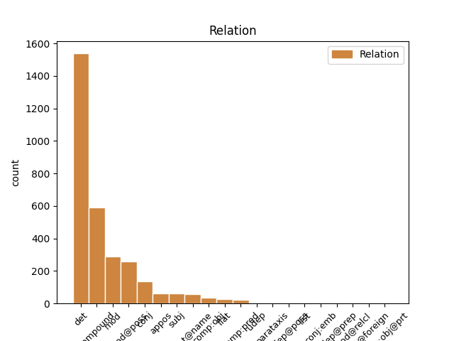
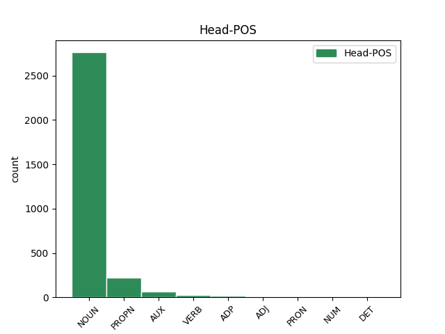
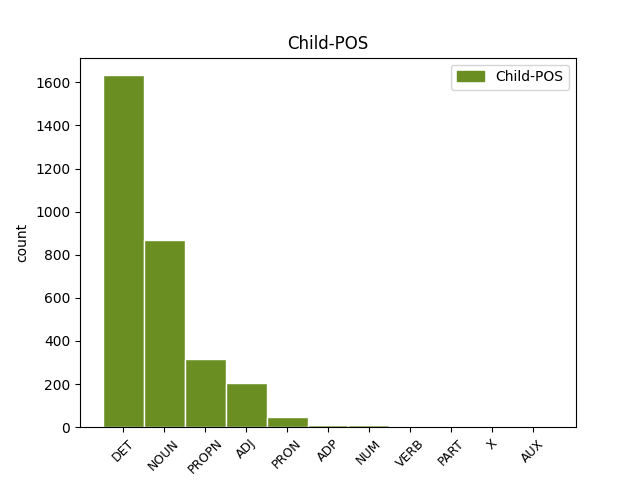

Distribution of features within this leaf



Agreement Rules sorted by frequency.
- When the dependent token is the determiner(det) of the head token, and the head token is NOUN and the dependent token is DET.
1 Y _ _ _ _ 0 _ _ _
2 Wasg _ _ _ _ 0 _ _ _
3 BBC _ _ _ _ 0 _ _ _
4 Cymru _ _ _ _ 0 _ _ _
5 oedd _ _ _ _ 0 _ _ _
6 yn _ _ _ _ 0 _ _ _
7 berchen _ _ _ _ 0 _ _ _
8 hawliau _ _ _ _ 0 _ _ _
9 teledu _ _ _ _ 0 _ _ _
10 a _ _ _ _ 0 _ _ _
11 radio _ _ _ _ 0 _ _ _
12 Uwch _ _ _ _ 0 _ _ _
13 Gynghrair _ _ _ _ 0 _ _ _
14 Cymru _ _ _ _ 0 _ _ _
15 ers _ _ _ _ 0 _ _ _
16 tymor _ _ _ _ 0 _ _ _
17 cyntaf _ _ _ _ 0 _ _ _
18 y y DET _ Definite=Def|Number=Sing|PronType=Art 19 det _ _
19 gynghrair _ NOUN _ Case=NomAcc|Definite=Def|Gender=Fem|Number=Sing 0 _ _ _
20 ym _ _ _ _ 0 _ _ _
21 1992 _ _ _ _ 0 _ _ _
22 hyd _ _ _ _ 0 _ _ _
23 at _ _ _ _ 0 _ _ _
24 ddiwedd _ _ _ _ 0 _ _ _
25 tymor _ _ _ _ 0 _ _ _
26 2008 _ _ _ _ 0 _ _ _
27 . _ _ _ _ 0 _ _ _
1 Ystyr _ _ _ _ 0 _ _ _
2 Leabaidh _ _ _ _ 0 _ _ _
3 an _ _ _ _ 0 _ _ _
4 Daimh _ _ _ _ 0 _ _ _
5 Bhuidhe _ _ _ _ 0 _ _ _
6 ydy _ _ _ _ 0 _ _ _
7 " _ _ _ _ 0 _ _ _
8 gwely _ _ _ _ 0 _ _ _
9 ( _ _ _ _ 0 _ _ _
10 neu _ _ _ _ 0 _ _ _
11 borfa)'r _ _ _ _ 0 _ _ _
12 carw carw NOUN _ Case=NomAcc|Gender=Fem|Number=Sing 0 _ _ _
13 melyn melyn NOUN _ Case=NomAcc|Gender=Masc|Number=Sing 12 compound _ _
14 " _ _ _ _ 0 _ _ _
15 . _ _ _ _ 0 _ _ _
1 Yn _ _ _ _ 0 _ _ _
2 y _ _ _ _ 0 _ _ _
3 Fyddin fyddin NOUN _ Case=NomAcc|Definite=Def|Gender=Masc|Number=Sing 0 _ _ _
4 Brydeinig Brydeinig ADJ _ Case=NomAcc|Gender=Masc|Number=Sing 3 mod _ _
5 mae _ _ _ _ 0 _ _ _
6 sgwadron _ _ _ _ 0 _ _ _
7 dan _ _ _ _ 0 _ _ _
8 arweiniad _ _ _ _ 0 _ _ _
9 uwchgapten _ _ _ _ 0 _ _ _
10 . _ _ _ _ 0 _ _ _
1 Yn _ _ _ _ 0 _ _ _
2 nhiroedd _ _ _ _ 0 _ _ _
3 Ymerodraeth _ _ _ _ 0 _ _ _
4 Prydain _ _ _ _ 0 _ _ _
5 gynt _ _ _ _ 0 _ _ _
6 ac _ _ _ _ 0 _ _ _
7 yn _ _ _ _ 0 _ _ _
8 America _ _ _ _ 0 _ _ _
9 , _ _ _ _ 0 _ _ _
10 pa _ _ _ _ 0 _ _ _
11 le _ _ _ _ 0 _ _ _
12 bynnag _ NOUN _ Case=NomAcc|Form=Len|Gender=Fem|Number=Sing 0 _ _ _
13 yr _ _ _ _ 0 _ _ _
14 ymfudodd _ NOUN _ Case=NomAcc|Definite=Def|Gender=Fem|Number=Sing 12 mod@poss _ _
15 Cymry _ _ _ _ 0 _ _ _
16 , _ _ _ _ 0 _ _ _
17 y _ _ _ _ 0 _ _ _
18 ceir _ _ _ _ 0 _ _ _
19 enwau _ _ _ _ 0 _ _ _
20 Cymreig _ _ _ _ 0 _ _ _
21 hyd _ _ _ _ 0 _ _ _
22 heddiw _ _ _ _ 0 _ _ _
23 . _ _ _ _ 0 _ _ _
1 Yn _ _ _ _ 0 _ _ _
2 y _ _ _ _ 0 _ _ _
3 7fed _ _ _ _ 0 _ _ _
4 ganrif _ _ _ _ 0 _ _ _
5 , _ _ _ _ 0 _ _ _
6 daeth _ _ _ _ 0 _ _ _
7 o _ _ _ _ 0 _ _ _
8 dan _ _ _ _ 0 _ _ _
9 deyrnas _ _ _ _ 0 _ _ _
10 Northumbria _ _ _ _ 0 _ _ _
11 a'i _ _ _ _ 0 _ _ _
12 arweinydd arweinydd NOUN _ Number=Sing 0 _ _ _
13 Ecgfrith Ecgfrith PROPN _ Case=NomAcc|Gender=Masc|Number=Sing 12 compound _ _
14 . _ _ _ _ 0 _ _ _
1 Yno _ _ _ _ 0 _ _ _
2 cyrhaeddodd _ _ _ _ 0 _ _ _
3 Dewi _ _ _ _ 0 _ _ _
4 ei _ _ _ _ 0 _ _ _
5 binacl _ _ _ _ 0 _ _ _
6 fel _ _ _ _ 0 _ _ _
7 pregethwr _ _ _ _ 0 _ _ _
8 , _ _ _ _ 0 _ _ _
9 ac _ _ _ _ 0 _ _ _
10 ennill _ _ _ _ 0 _ _ _
11 enw _ _ _ _ 0 _ _ _
12 iddo'i _ _ _ _ 0 _ _ _
13 hun _ _ _ _ 0 _ _ _
14 drwy _ _ _ _ 0 _ _ _
15 Gymru _ _ _ _ 0 _ _ _
16 fel _ _ _ _ 0 _ _ _
17 pregethwr _ _ _ _ 0 _ _ _
18 penigamp _ _ _ _ 0 _ _ _
19 , _ _ _ _ 0 _ _ _
20 ond _ _ _ _ 0 _ _ _
21 yna _ _ _ _ 0 _ _ _
22 hefyd _ _ _ _ 0 _ _ _
23 dechreuodd _ _ _ _ 0 _ _ _
24 y _ _ _ _ 0 _ _ _
25 problemau _ _ _ _ 0 _ _ _
26 ariannol _ _ _ _ 0 _ _ _
27 a _ _ _ _ 0 _ _ _
28 phersonol _ _ _ _ 0 _ _ _
29 a _ _ _ _ 0 _ _ _
30 fyddai'n _ _ _ _ 0 _ _ _
31 ei _ _ _ _ 0 _ _ _
32 ddilyn _ _ _ _ 0 _ _ _
33 am _ _ _ _ 0 _ _ _
34 weddill _ _ _ _ 0 _ _ _
35 ei ei DET _ Gender=Masc|Number=Sing|Person=3|Poss=Yes 36 mod@poss _ _
36 oes _ NOUN _ Case=NomAcc|Definite=Def|Gender=Fem|Number=Sing 0 _ _ _
37 . _ _ _ _ 0 _ _ _
1 Ystyr _ _ _ _ 0 _ _ _
2 Leabaidh _ _ _ _ 0 _ _ _
3 an _ _ _ _ 0 _ _ _
4 Daimh _ _ _ _ 0 _ _ _
5 Bhuidhe _ _ _ _ 0 _ _ _
6 ydy _ _ _ _ 0 _ _ _
7 " _ _ _ _ 0 _ _ _
8 gwely gwely NOUN _ Case=NomAcc|Gender=Masc|Number=Sing 0 _ _ _
9 ( _ _ _ _ 0 _ _ _
10 neu _ _ _ _ 0 _ _ _
11 borfa)'r borf NOUN _ Case=NomAcc|Gender=Masc|Number=Sing 8 conj _ _
12 carw _ _ _ _ 0 _ _ _
13 melyn _ _ _ _ 0 _ _ _
14 " _ _ _ _ 0 _ _ _
15 . _ _ _ _ 0 _ _ _
1 Ymosododd _ _ _ _ 0 _ _ _
2 Ghengis Ghengis PROPN _ Case=NomAcc|Gender=Masc|Number=Sing 0 _ _ _
3 Khan Khan PROPN _ Case=NomAcc|Gender=Masc|Number=Sing 2 flat@name _ _
4 ar _ _ _ _ 0 _ _ _
5 Hsi _ _ _ _ 0 _ _ _
6 - _ _ _ _ 0 _ _ _
7 hsia _ _ _ _ 0 _ _ _
8 neu _ _ _ _ 0 _ _ _
9 Xixia _ _ _ _ 0 _ _ _
10 . _ _ _ _ 0 _ _ _
1 Yna _ _ _ _ 0 _ _ _
2 fe _ _ _ _ 0 _ _ _
3 briododd _ _ _ _ 0 _ _ _
4 Ann _ _ _ _ 0 _ _ _
5 Beynon _ _ _ _ 0 _ _ _
6 a _ _ _ _ 0 _ _ _
7 cafodd _ _ _ _ 0 _ _ _
8 merch merch NOUN _ Case=NomAcc|Gender=Fem|Number=Sing 0 _ _ _
9 a _ _ _ _ 0 _ _ _
10 mab mab NOUN _ Case=NomAcc|Form=Len|Gender=Fem|Number=Sing 8 mod _ _
11 o'i _ _ _ _ 0 _ _ _
12 ail _ _ _ _ 0 _ _ _
13 briodas _ _ _ _ 0 _ _ _
14 . _ _ _ _ 0 _ _ _
1 Yr _ _ _ _ 0 _ _ _
2 Unol _ _ _ _ 0 _ _ _
3 Daleithiau _ _ _ _ 0 _ _ _
4 Yn _ _ _ _ 0 _ _ _
5 2000 _ _ _ _ 0 _ _ _
6 , _ _ _ _ 0 _ _ _
7 roedd _ _ _ _ 0 _ _ _
8 3,578,718 _ _ _ _ 0 _ _ _
9 , _ _ _ _ 0 _ _ _
10 sef _ _ _ _ 0 _ _ _
11 3.09 _ _ _ _ 0 _ _ _
12 % _ _ _ _ 0 _ _ _
13 o _ _ _ _ 0 _ _ _
14 stoc _ _ _ _ 0 _ _ _
15 tai _ _ _ _ 0 _ _ _
16 yr _ DET _ Definite=Def|Number=Sing|PronType=Art 17 det _ _
17 Unol _ PROPN _ Case=NomAcc|Definite=Def|Gender=Fem|Number=Sing 0 _ _ _
18 Daleithiau _ _ _ _ 0 _ _ _
19 yn _ _ _ _ 0 _ _ _
20 dai _ _ _ _ 0 _ _ _
21 haf _ _ _ _ 0 _ _ _
22 ac _ _ _ _ 0 _ _ _
23 ail _ _ _ _ 0 _ _ _
24 gartrefi _ _ _ _ 0 _ _ _
25 , _ _ _ _ 0 _ _ _
26 o'i _ _ _ _ 0 _ _ _
27 gymharu _ _ _ _ 0 _ _ _
28 â _ _ _ _ 0 _ _ _
29 2.66 _ _ _ _ 0 _ _ _
30 % _ _ _ _ 0 _ _ _
31 yn _ _ _ _ 0 _ _ _
32 1990 _ _ _ _ 0 _ _ _
33 , _ _ _ _ 0 _ _ _
34 1.87 _ _ _ _ 0 _ _ _
35 % _ _ _ _ 0 _ _ _
36 yn _ _ _ _ 0 _ _ _
37 1980 _ _ _ _ 0 _ _ _
38 . _ _ _ _ 0 _ _ _
1 Stephens _ _ _ _ 0 _ _ _
2 t. _ _ _ _ 0 _ _ _
3 3 _ _ _ _ 0 _ _ _
4 Cysylltodd _ _ _ _ 0 _ _ _
5 y _ _ _ _ 0 _ _ _
6 gerdd gerdd NOUN _ Case=NomAcc|Definite=Def|Gender=Masc|Number=Sing 0 _ _ _
7 a _ _ _ _ 0 _ _ _
8 Brwydr Brwydr PROPN _ Case=NomAcc|Gender=Masc|Number=Sing 6 mod _ _
9 Degsastan _ _ _ _ 0 _ _ _
10 tua _ _ _ _ 0 _ _ _
11 603 _ _ _ _ 0 _ _ _
12 rhwng _ _ _ _ 0 _ _ _
13 Æthelfrith _ _ _ _ 0 _ _ _
14 , _ _ _ _ 0 _ _ _
15 brenin _ _ _ _ 0 _ _ _
16 Brynaich _ _ _ _ 0 _ _ _
17 a _ _ _ _ 0 _ _ _
18 Dál _ _ _ _ 0 _ _ _
19 Riata _ _ _ _ 0 _ _ _
20 dan _ _ _ _ 0 _ _ _
21 Áedán _ _ _ _ 0 _ _ _
22 mac _ _ _ _ 0 _ _ _
23 Gabráin _ _ _ _ 0 _ _ _
24 . _ _ _ _ 0 _ _ _
1 Weithiau _ _ _ _ 0 _ _ _
2 cafodd _ _ _ _ 0 _ _ _
3 cwiltiau _ _ _ _ 0 _ _ _
4 eu eu PRON _ Number=Sing|Person=2 5 mod@poss _ _
5 haddurno haddurno NOUN _ Case=NomAcc|Definite=Def|Gender=Fem|Number=Sing 0 _ _ _
6 ag _ _ _ _ 0 _ _ _
7 appliqué _ _ _ _ 0 _ _ _
8 o _ _ _ _ 0 _ _ _
9 ddyluniadau _ _ _ _ 0 _ _ _
10 blodau _ _ _ _ 0 _ _ _
11 a _ _ _ _ 0 _ _ _
12 dail _ _ _ _ 0 _ _ _
13 . _ _ _ _ 0 _ _ _
1 Thank _ _ _ _ 0 _ _ _
2 You _ _ _ _ 0 _ _ _
3 , _ _ _ _ 0 _ _ _
4 Willie _ _ _ _ 0 _ _ _
5 Nelson _ _ _ _ 0 _ _ _
6 ( _ _ _ _ 0 _ _ _
7 " _ _ _ _ 0 _ _ _
8 Diolch _ _ _ _ 0 _ _ _
9 i _ _ _ _ 0 _ _ _
10 chi _ _ _ _ 0 _ _ _
11 , _ _ _ _ 0 _ _ _
12 Willie Willie PROPN _ Number=Sing|Shared=Yes 0 _ _ _
13 Nelson Nelson PROPN _ Number=Sing 12 flat _ _
14 " _ _ _ _ 0 _ _ _
15 ) _ _ _ _ 0 _ _ _
16 * _ _ _ _ 0 _ _ _
17 37 _ _ _ _ 0 _ _ _
18 . _ _ _ _ 0 _ _ _
1 Yr _ _ _ _ 0 _ _ _
2 unig _ _ _ _ 0 _ _ _
3 faes faes NOUN _ Case=NomAcc|Definite=Def|Gender=Masc|Number=Sing 15 subj _ _
4 a _ _ _ _ 0 _ _ _
5 oedd _ _ _ _ 0 _ _ _
6 ar _ _ _ _ 0 _ _ _
7 agor _ _ _ _ 0 _ _ _
8 i _ _ _ _ 0 _ _ _
9 un _ _ _ _ 0 _ _ _
10 o _ _ _ _ 0 _ _ _
11 sefyllfa _ _ _ _ 0 _ _ _
12 ac _ _ _ _ 0 _ _ _
13 adnoddau _ _ _ _ 0 _ _ _
14 Mair _ _ _ _ 0 _ _ _
15 oedd _ AUX _ Aspect=Imp|Mood=Ind|Number=Sing|Person=1|Tense=Past|VerbForm=Fin|Voice=Act 0 _ _ _
16 bydwreigiaeth _ _ _ _ 0 _ _ _
17 . _ _ _ _ 0 _ _ _
1 Yn _ _ _ _ 0 _ _ _
2 ôl _ _ _ _ 0 _ _ _
3 y _ _ _ _ 0 _ _ _
4 testunau _ _ _ _ 0 _ _ _
5 cyfraith _ _ _ _ 0 _ _ _
6 Wyddelig _ _ _ _ 0 _ _ _
7 cynnar _ _ _ _ 0 _ _ _
8 , _ _ _ _ 0 _ _ _
9 yr _ _ _ _ 0 _ _ _
10 oedd _ _ _ _ 0 _ _ _
11 rhaid _ _ _ _ 0 _ _ _
12 i'r _ _ _ _ 0 _ _ _
13 túath _ _ _ _ 0 _ _ _
14 gael _ _ _ _ 0 _ _ _
15 brenin brenin NOUN _ Case=NomAcc|Gender=Masc|Number=Sing 0 _ _ _
16 , _ _ _ _ 0 _ _ _
17 ysgolhaig ysgolhaig NOUN _ Case=NomAcc|Gender=Masc|Number=Sing 15 appos _ _
18 eglwysig _ _ _ _ 0 _ _ _
19 ( _ _ _ _ 0 _ _ _
20 ecnae _ _ _ _ 0 _ _ _
21 ) _ _ _ _ 0 _ _ _
22 , _ _ _ _ 0 _ _ _
23 clerigwr _ _ _ _ 0 _ _ _
24 a _ _ _ _ 0 _ _ _
25 bardd _ _ _ _ 0 _ _ _
26 i _ _ _ _ 0 _ _ _
27 gyfrif _ _ _ _ 0 _ _ _
28 fel _ _ _ _ 0 _ _ _
29 túath _ _ _ _ 0 _ _ _
30 go _ _ _ _ 0 _ _ _
31 iawn _ _ _ _ 0 _ _ _
32 . _ _ _ _ 0 _ _ _
1 Yn _ _ _ _ 0 _ _ _
2 2009 _ _ _ _ 0 _ _ _
3 cyhoeddodd _ _ _ _ 0 _ _ _
4 Canolfan _ _ _ _ 0 _ _ _
5 Brookings _ _ _ _ 0 _ _ _
6 fod _ _ _ _ 0 _ _ _
7 ymosodiadau _ _ _ _ 0 _ _ _
8 drôns _ _ _ _ 0 _ _ _
9 yr _ _ _ _ 0 _ _ _
10 Unol _ PROPN _ Case=NomAcc|Definite=Def|Gender=Fem|Number=Sing 0 _ _ _
11 Daleithiau _ PROPN _ Case=Gen|Gender=Masc|Number=Sing 10 compound _ _
12 ym _ _ _ _ 0 _ _ _
13 Mhacistan _ _ _ _ 0 _ _ _
14 - _ _ _ _ 0 _ _ _
15 ar _ _ _ _ 0 _ _ _
16 gyfartaledd _ _ _ _ 0 _ _ _
17 - _ _ _ _ 0 _ _ _
18 yn _ _ _ _ 0 _ _ _
19 lladd _ _ _ _ 0 _ _ _
20 deg _ _ _ _ 0 _ _ _
21 o _ _ _ _ 0 _ _ _
22 sifiliad _ _ _ _ 0 _ _ _
23 am _ _ _ _ 0 _ _ _
24 bob _ _ _ _ 0 _ _ _
25 un _ _ _ _ 0 _ _ _
26 ' _ _ _ _ 0 _ _ _
27 terfysgwr _ _ _ _ 0 _ _ _
28 ' _ _ _ _ 0 _ _ _
29 . _ _ _ _ 0 _ _ _
1 Yn _ _ _ _ 0 _ _ _
2 yr _ _ _ _ 0 _ _ _
3 Henfyd _ _ _ _ 0 _ _ _
4 , _ _ _ _ 0 _ _ _
5 Scythia _ _ _ _ 0 _ _ _
6 ( _ _ _ _ 0 _ _ _
7 Hen _ _ _ _ 0 _ _ _
8 Roeg _ _ _ _ 0 _ _ _
9 Skythia _ _ _ _ 0 _ _ _
10 ) _ _ _ _ 0 _ _ _
11 oedd _ AUX _ Aspect=Imp|Mood=Ind|Number=Sing|Person=1|Tense=Past|VerbForm=Fin|Voice=Act 0 _ _ _
12 yr _ _ _ _ 0 _ _ _
13 enw enw NOUN _ Number=Sing 11 comp:pred _ _
14 ar _ _ _ _ 0 _ _ _
15 yr _ _ _ _ 0 _ _ _
16 ardal _ _ _ _ 0 _ _ _
17 yn _ _ _ _ 0 _ _ _
18 Ewrasia _ _ _ _ 0 _ _ _
19 lle _ _ _ _ 0 _ _ _
20 trigai'r _ _ _ _ 0 _ _ _
21 Scythiaid _ _ _ _ 0 _ _ _
22 , _ _ _ _ 0 _ _ _
23 o'r _ _ _ _ 0 _ _ _
24 8fed _ _ _ _ 0 _ _ _
25 ganrif _ _ _ _ 0 _ _ _
26 CC _ _ _ _ 0 _ _ _
27 hyd _ _ _ _ 0 _ _ _
28 yr _ _ _ _ 0 _ _ _
29 2il _ _ _ _ 0 _ _ _
30 ganrif _ _ _ _ 0 _ _ _
31 OC _ _ _ _ 0 _ _ _
32 . _ _ _ _ 0 _ _ _
1 Yn _ _ _ _ 0 _ _ _
2 y _ _ _ _ 0 _ _ _
3 7fed _ _ _ _ 0 _ _ _
4 ganrif _ _ _ _ 0 _ _ _
5 , _ _ _ _ 0 _ _ _
6 daeth _ _ _ _ 0 _ _ _
7 o _ _ _ _ 0 _ _ _
8 dan _ _ _ _ 0 _ _ _
9 deyrnas _ _ _ _ 0 _ _ _
10 Northumbria _ _ _ _ 0 _ _ _
11 a'i is ADP _ Number=Sing|Person=1 0 _ _ _
12 arweinydd arweinydd NOUN _ Number=Sing 11 comp:obj _ _
13 Ecgfrith _ _ _ _ 0 _ _ _
14 . _ _ _ _ 0 _ _ _
1 Y _ _ _ _ 0 _ _ _
2 Lenovo Lenovo PROPN _ Number=Sing 0 _ _ _
3 X61 _ _ _ _ 0 _ _ _
4 : _ _ _ _ 0 _ _ _
5 ( _ _ _ _ 0 _ _ _
6 neu _ _ _ _ 0 _ _ _
7 LePad LepaD PROPN _ Number=Sing 2 conj _ _
8 ) _ _ _ _ 0 _ _ _
9 tabled _ _ _ _ 0 _ _ _
10 hylaw _ _ _ _ 0 _ _ _
11 , _ _ _ _ 0 _ _ _
12 ysgafn _ _ _ _ 0 _ _ _
13 a _ _ _ _ 0 _ _ _
14 phwerus _ _ _ _ 0 _ _ _
15 . _ _ _ _ 0 _ _ _
1 Ynghyd _ _ _ _ 0 _ _ _
2 a'i _ _ _ _ 0 _ _ _
3 wraig _ _ _ _ 0 _ _ _
4 Chris Chris PROPN _ Case=NomAcc|Gender=Masc|Number=Sing 0 _ _ _
5 , _ _ _ _ 0 _ _ _
6 dyfeisiodd dyfeisiodd NOUN _ Case=NomAcc|Gender=Masc|Number=Sing 4 appos _ _
7 y _ _ _ _ 0 _ _ _
8 Skinsuit _ _ _ _ 0 _ _ _
9 . _ _ _ _ 0 _ _ _
1 The _ _ _ _ 0 _ _ _
2 Short _ _ _ _ 0 _ _ _
3 , _ _ _ _ 0 _ _ _
4 Quick _ _ _ _ 0 _ _ _
5 Summer Summer PROPN _ Number=Sing 0 _ _ _
6 ( _ _ _ _ 0 _ _ _
7 " _ _ _ _ 0 _ _ _
8 Yr _ _ _ _ 0 _ _ _
9 Haf _ _ _ _ 0 _ _ _
10 Cyflym _ _ _ _ 0 _ _ _
11 Byr Byr PROPN _ Number=Sing 5 appos _ _
12 " _ _ _ _ 0 _ _ _
13 ) _ _ _ _ 0 _ _ _
14 * _ _ _ _ 0 _ _ _
15 210 _ _ _ _ 0 _ _ _
16 / _ _ _ _ 0 _ _ _
17 40A. _ _ _ _ 0 _ _ _
1 Yn _ _ _ _ 0 _ _ _
2 Ogof _ _ _ _ 0 _ _ _
3 Kendrick _ _ _ _ 0 _ _ _
4 ar _ _ _ _ 0 _ _ _
5 Ben _ _ _ _ 0 _ _ _
6 y _ _ _ _ 0 _ _ _
7 Gogarth _ _ _ _ 0 _ _ _
8 ceir _ _ _ _ 0 _ _ _
9 olion _ _ _ _ 0 _ _ _
10 naddu _ _ _ _ 0 _ _ _
11 ar _ _ _ _ 0 _ _ _
12 asgwrn _ _ _ _ 0 _ _ _
13 gên _ _ _ _ 0 _ _ _
14 ceffyl _ _ _ _ 0 _ _ _
15 ac _ _ _ _ 0 _ _ _
16 ar _ _ _ _ 0 _ _ _
17 ddannedd _ NOUN _ Case=NomAcc|Form=Len|Gender=Fem|Number=Sing 0 _ _ _
18 gwartheg _ ADJ _ Case=NomAcc|Gender=Masc|Number=Sing 17 compound _ _
19 gwyllt _ _ _ _ 0 _ _ _
20 a _ _ _ _ 0 _ _ _
21 cheirw _ _ _ _ 0 _ _ _
22 a _ _ _ _ 0 _ _ _
23 gellir _ _ _ _ 0 _ _ _
24 dyddio _ _ _ _ 0 _ _ _
25 rhain _ _ _ _ 0 _ _ _
26 i _ _ _ _ 0 _ _ _
27 ddiwedd _ _ _ _ 0 _ _ _
28 Hen _ _ _ _ 0 _ _ _
29 Oes _ _ _ _ 0 _ _ _
30 y _ _ _ _ 0 _ _ _
31 Cerrig _ _ _ _ 0 _ _ _
32 Uchaf _ _ _ _ 0 _ _ _
33 : _ _ _ _ 0 _ _ _
34 10,000 _ _ _ _ 0 _ _ _
35 CP _ _ _ _ 0 _ _ _
36 . _ _ _ _ 0 _ _ _
1 Yr _ _ _ _ 0 _ _ _
2 Unol _ _ _ _ 0 _ _ _
3 Daleithiau _ _ _ _ 0 _ _ _
4 Yn _ _ _ _ 0 _ _ _
5 2000 _ _ _ _ 0 _ _ _
6 , _ _ _ _ 0 _ _ _
7 roedd _ _ _ _ 0 _ _ _
8 3,578,718 _ _ _ _ 0 _ _ _
9 , _ _ _ _ 0 _ _ _
10 sef _ _ _ _ 0 _ _ _
11 3.09 _ _ _ _ 0 _ _ _
12 % _ _ _ _ 0 _ _ _
13 o _ _ _ _ 0 _ _ _
14 stoc _ _ _ _ 0 _ _ _
15 tai _ _ _ _ 0 _ _ _
16 yr _ _ _ _ 0 _ _ _
17 Unol _ PROPN _ Case=NomAcc|Definite=Def|Gender=Fem|Number=Sing 0 _ _ _
18 Daleithiau daleithia NOUN _ Case=NomAcc|Definite=Def|Gender=Fem|Number=Sing 17 compound _ _
19 yn _ _ _ _ 0 _ _ _
20 dai _ _ _ _ 0 _ _ _
21 haf _ _ _ _ 0 _ _ _
22 ac _ _ _ _ 0 _ _ _
23 ail _ _ _ _ 0 _ _ _
24 gartrefi _ _ _ _ 0 _ _ _
25 , _ _ _ _ 0 _ _ _
26 o'i _ _ _ _ 0 _ _ _
27 gymharu _ _ _ _ 0 _ _ _
28 â _ _ _ _ 0 _ _ _
29 2.66 _ _ _ _ 0 _ _ _
30 % _ _ _ _ 0 _ _ _
31 yn _ _ _ _ 0 _ _ _
32 1990 _ _ _ _ 0 _ _ _
33 , _ _ _ _ 0 _ _ _
34 1.87 _ _ _ _ 0 _ _ _
35 % _ _ _ _ 0 _ _ _
36 yn _ _ _ _ 0 _ _ _
37 1980 _ _ _ _ 0 _ _ _
38 . _ _ _ _ 0 _ _ _
1 Yng _ _ _ _ 0 _ _ _
2 ngwledydd gwledydd NOUN _ Case=NomAcc|Form=Ecl|Gender=Masc|Number=Sing 0 _ _ _
3 Prydain Prydai PROPN _ Case=Gen|Gender=Fem|Number=Sing 2 mod@poss _ _
4 ac _ _ _ _ 0 _ _ _
5 Iwerddon _ _ _ _ 0 _ _ _
6 roedd _ _ _ _ 0 _ _ _
7 cerrig _ _ _ _ 0 _ _ _
8 meirch _ _ _ _ 0 _ _ _
9 i'w _ _ _ _ 0 _ _ _
10 gweld _ _ _ _ 0 _ _ _
11 yn _ _ _ _ 0 _ _ _
12 gyffredin _ _ _ _ 0 _ _ _
13 iawn _ _ _ _ 0 _ _ _
14 hyd _ _ _ _ 0 _ _ _
15 at _ _ _ _ 0 _ _ _
16 y _ _ _ _ 0 _ _ _
17 18fed _ _ _ _ 0 _ _ _
18 ganrif _ _ _ _ 0 _ _ _
19 y _ _ _ _ 0 _ _ _
20 tu _ _ _ _ 0 _ _ _
21 allan _ _ _ _ 0 _ _ _
22 i _ _ _ _ 0 _ _ _
23 eglwysi _ _ _ _ 0 _ _ _
24 , _ _ _ _ 0 _ _ _
25 tai _ _ _ _ 0 _ _ _
26 fferm _ _ _ _ 0 _ _ _
27 a _ _ _ _ 0 _ _ _
28 thafarndai _ _ _ _ 0 _ _ _
29 . _ _ _ _ 0 _ _ _
1 Yn _ _ _ _ 0 _ _ _
2 y _ _ _ _ 0 _ _ _
3 Canol _ _ _ _ 0 _ _ _
4 Oesoedd _ _ _ _ 0 _ _ _
5 , _ _ _ _ 0 _ _ _
6 hi hi PRON _ Gender=Fem|Number=Sing|Person=3 7 subj _ _
7 oedd _ AUX _ Aspect=Imp|Mood=Ind|Number=Sing|Person=1|Tense=Past|VerbForm=Fin|Voice=Act 0 _ _ _
8 canolfan _ _ _ _ 0 _ _ _
9 llinach _ _ _ _ 0 _ _ _
10 Dugiaid _ _ _ _ 0 _ _ _
11 Arlon _ _ _ _ 0 _ _ _
12 . _ _ _ _ 0 _ _ _
1 Y _ _ _ _ 0 _ _ _
2 bwriad bwriad NOUN _ Case=NomAcc|Definite=Def|Gender=Fem|Number=Sing 3 subj _ _
3 oedd _ VERB _ Aspect=Imp|Mood=Ind|Number=Sing|Person=1|Tense=Past|VerbForm=Fin|Voice=Act 0 _ _ _
4 creu _ _ _ _ 0 _ _ _
5 60 _ _ _ _ 0 _ _ _
6 o _ _ _ _ 0 _ _ _
7 dai _ _ _ _ 0 _ _ _
8 safonol _ _ _ _ 0 _ _ _
9 ar _ _ _ _ 0 _ _ _
10 leiniau _ _ _ _ 0 _ _ _
11 trionglog _ _ _ _ 0 _ _ _
12 , _ _ _ _ 0 _ _ _
13 gyda _ _ _ _ 0 _ _ _
14 rhwydwaith _ _ _ _ 0 _ _ _
15 cynhleth _ _ _ _ 0 _ _ _
16 o _ _ _ _ 0 _ _ _
17 lwybrau'n _ _ _ _ 0 _ _ _
18 plethu _ _ _ _ 0 _ _ _
19 rhyngddynt _ _ _ _ 0 _ _ _
20 . _ _ _ _ 0 _ _ _
1 Priododd _ _ _ _ 0 _ _ _
2 ferch _ _ _ _ 0 _ _ _
3 o'r _ _ _ _ 0 _ _ _
4 enw _ _ _ _ 0 _ _ _
5 Margred _ _ _ _ 0 _ _ _
6 a _ _ _ _ 0 _ _ _
7 bu _ _ _ _ 0 _ _ _
8 iddynt _ _ _ _ 0 _ _ _
9 dri _ _ _ _ 0 _ _ _
10 o _ _ _ _ 0 _ _ _
11 feibion fei NOUN _ Case=NomAcc|Form=Len|Gender=Fem|Number=Sing 0 _ _ _
12 , _ _ _ _ 0 _ _ _
13 Ieuan Ieuan PROPN _ Case=NomAcc|Gender=Masc|Number=Sing 11 appos _ _
14 , _ _ _ _ 0 _ _ _
15 Meredudd _ _ _ _ 0 _ _ _
16 a _ _ _ _ 0 _ _ _
17 Llywelyn _ _ _ _ 0 _ _ _
18 . _ _ _ _ 0 _ _ _
1 Wrench Wrench PROPN _ Case=NomAcc|Gender=Masc|Number=Sing 2 subj _ _
2 oedd _ AUX _ Aspect=Imp|Mood=Ind|Number=Sing|Person=1|Tense=Past|VerbForm=Fin|Voice=Act 0 _ _ _
3 cyfansoddwr _ _ _ _ 0 _ _ _
4 a _ _ _ _ 0 _ _ _
5 prif _ _ _ _ 0 _ _ _
6 leisydd _ _ _ _ 0 _ _ _
7 y _ _ _ _ 0 _ _ _
8 band _ _ _ _ 0 _ _ _
9 . _ _ _ _ 0 _ _ _
1 Ymhlith _ _ _ _ 0 _ _ _
2 y _ _ _ _ 0 _ _ _
3 lluniau _ _ _ _ 0 _ _ _
4 a _ _ _ _ 0 _ _ _
5 greodd _ _ _ _ 0 _ _ _
6 ar _ _ _ _ 0 _ _ _
7 y _ _ _ _ 0 _ _ _
8 cyd _ _ _ _ 0 _ _ _
9 â _ _ _ _ 0 _ _ _
10 Hunt _ _ _ _ 0 _ _ _
11 y _ _ _ _ 0 _ _ _
12 mae _ _ _ _ 0 _ _ _
13 The _ _ _ _ 0 _ _ _
14 Light _ _ _ _ 0 _ _ _
15 of _ _ _ _ 0 _ _ _
16 the _ _ _ _ 0 _ _ _
17 World _ _ _ _ 0 _ _ _
18 a _ _ _ _ 0 _ _ _
19 The _ _ _ _ 0 _ _ _
20 Lady Lady PROPN _ Case=NomAcc|Gender=Masc|Number=Sing 0 _ _ _
21 of _ _ _ _ 0 _ _ _
22 Shalott Shalott PROPN _ Case=NomAcc|Gender=Masc|Number=Sing 20 mod _ _
23 . _ _ _ _ 0 _ _ _
1 Nid _ _ _ _ 0 _ _ _
2 yw'r _ _ _ _ 0 _ _ _
3 hen _ _ _ _ 0 _ _ _
4 dafarn _ _ _ _ 0 _ _ _
5 yn _ _ _ _ 0 _ _ _
6 bod _ _ _ _ 0 _ _ _
7 bellach _ _ _ _ 0 _ _ _
8 , _ _ _ _ 0 _ _ _
9 ond _ _ _ _ 0 _ _ _
10 mae _ _ _ _ 0 _ _ _
11 plac _ _ _ _ 0 _ _ _
12 yn _ _ _ _ 0 _ _ _
13 nodi _ _ _ _ 0 _ _ _
14 ei is ADP _ Gender=Masc|Number=Sing|Person=3|Poss=Yes 15 udep@poss _ _
15 safle safle NOUN _ Number=Sing 0 _ _ _
16 . _ _ _ _ 0 _ _ _
1 Sgarff sgarff NOUN _ Case=NomAcc|Gender=Masc|Number=Sing 0 _ _ _
2 am _ _ _ _ 0 _ _ _
3 eich _ _ _ _ 0 _ _ _
4 llygaid llygai NOUN _ Case=Gen|Gender=Fem|Number=Sing 1 comp:obj _ _
5 . _ _ _ _ 0 _ _ _
1 Nofel _ _ _ _ 0 _ _ _
2 fer _ _ _ _ 0 _ _ _
3 i _ _ _ _ 0 _ _ _
4 bla _ _ _ _ 0 _ _ _
5 nt _ _ _ _ 0 _ _ _
6 7 7 NUM _ Number=Plur|NumType=Card 0 _ _ _
7 - _ _ _ _ 0 _ _ _
8 10 10 NUM _ Number=Plur|NumType=Card 6 conj _ _
9 oed _ _ _ _ 0 _ _ _
10 . _ _ _ _ 0 _ _ _
1 Darlun darlun NOUN _ Case=NomAcc|Gender=Masc|Number=Sing 0 _ _ _
2 o'r o'r ADP _ Case=NomAcc|Gender=Masc|Number=Sing 1 compound _ _
3 Preutur _ _ _ _ 0 _ _ _
4 Siôn _ _ _ _ 0 _ _ _
5 ar _ _ _ _ 0 _ _ _
6 fap _ _ _ _ 0 _ _ _
7 o _ _ _ _ 0 _ _ _
8 Ddwyrain _ _ _ _ 0 _ _ _
9 Affrica _ _ _ _ 0 _ _ _
10 , _ _ _ _ 0 _ _ _
11 1558 _ _ _ _ 0 _ _ _
12 . _ _ _ _ 0 _ _ _
1 Baner Baner PROPN _ Animacy=Anim|Case=Nom|Gender=Masc|NameType=Sur|Number=Sing|Polarity=Pos 0 _ _ _
2 Oblast oblast NOUN _ Case=Nom|Gender=Fem|Number=Sing|Polarity=Pos 1 mod _ _
3 Tomsk _ _ _ _ 0 _ _ _
4 . _ _ _ _ 0 _ _ _
1 Y _ _ _ _ 0 _ _ _
2 Lenovo Lenovo PROPN _ Number=Sing 9 subj _ _
3 X61 _ _ _ _ 0 _ _ _
4 : _ _ _ _ 0 _ _ _
5 ( _ _ _ _ 0 _ _ _
6 neu _ _ _ _ 0 _ _ _
7 LePad _ _ _ _ 0 _ _ _
8 ) _ _ _ _ 0 _ _ _
9 tabled tabled NOUN _ Number=Sing 0 _ _ _
10 hylaw _ _ _ _ 0 _ _ _
11 , _ _ _ _ 0 _ _ _
12 ysgafn _ _ _ _ 0 _ _ _
13 a _ _ _ _ 0 _ _ _
14 phwerus _ _ _ _ 0 _ _ _
15 . _ _ _ _ 0 _ _ _
1 Ni _ _ _ _ 0 _ _ _
2 wnaeth wnaeth VERB _ Case=NomAcc|Gender=Masc|Number=Sing 0 _ _ _
3 briodi briodi NOUN _ Case=Gen|Gender=Masc|Number=Sing 2 comp:obj _ _
4 na _ _ _ _ 0 _ _ _
5 chael _ _ _ _ 0 _ _ _
6 plant _ _ _ _ 0 _ _ _
7 . _ _ _ _ 0 _ _ _
1 Maamme maa NOUN _ Mood=Ind|Number=Plur|Person=1|Tense=Pres|VerbForm=Fin|Voice=Act 0 _ _ _
2 ( _ _ _ _ 0 _ _ _
3 Cyfieithiad _ _ _ _ 0 _ _ _
4 gan _ _ _ _ 0 _ _ _
5 Paavo _ _ _ _ 0 _ _ _
6 Cajander _ _ _ _ 0 _ _ _
7 ) _ _ _ _ 0 _ _ _
8 : _ _ _ _ 0 _ _ _
9 Oi _ _ _ _ 0 _ _ _
10 maamme maa NOUN _ Mood=Ind|Number=Plur|Person=1|Tense=Pres|VerbForm=Fin|Voice=Act 1 parataxis _ _
11 , _ _ _ _ 0 _ _ _
12 Suomi _ _ _ _ 0 _ _ _
13 , _ _ _ _ 0 _ _ _
14 synnyinmaa _ _ _ _ 0 _ _ _
15 ! _ _ _ _ 0 _ _ _
1 Cwmni _ _ _ _ 0 _ _ _
2 sy'n _ _ _ _ 0 _ _ _
3 berchen _ _ _ _ 0 _ _ _
4 ar _ _ _ _ 0 _ _ _
5 rwydwaith _ _ _ _ 0 _ _ _
6 o _ _ _ _ 0 _ _ _
7 orsafoedd _ _ _ _ 0 _ _ _
8 radio _ _ _ _ 0 _ _ _
9 lleol _ _ _ _ 0 _ _ _
10 , _ _ _ _ 0 _ _ _
11 rhanbarthol _ ADJ _ Case=NomAcc|Gender=Fem|Number=Plur 0 _ _ _
12 a _ _ _ _ 0 _ _ _
13 chenedlaethol _ ADJ _ Case=NomAcc|Gender=Fem|Number=Plur 11 conj _ _
14 yw _ _ _ _ 0 _ _ _
15 GCap _ _ _ _ 0 _ _ _
16 Media _ _ _ _ 0 _ _ _
17 . _ _ _ _ 0 _ _ _
1 Tai tai NOUN _ Case=NomAcc|Gender=Masc|Number=Sing 0 _ _ _
2 haf _ _ _ _ 0 _ _ _
3 ar _ _ _ _ 0 _ _ _
4 draeth _ _ _ _ 0 _ _ _
5 Aberdesach _ _ _ _ 0 _ _ _
6 Pentref pentref NOUN _ Case=NomAcc|Definite=Def|Gender=Masc|Number=Sing 1 subj _ _
7 bychan _ _ _ _ 0 _ _ _
8 ar _ _ _ _ 0 _ _ _
9 arfordir _ _ _ _ 0 _ _ _
10 gogleddol _ _ _ _ 0 _ _ _
11 Gwynedd _ _ _ _ 0 _ _ _
12 yw _ _ _ _ 0 _ _ _
13 Aberdesach _ _ _ _ 0 _ _ _
14 . _ _ _ _ 0 _ _ _
1 Rhan rh VERB _ Mood=Ind|Number=Sing|Person=1|Tense=Pres|VerbForm=Fin 0 _ _ _
2 o _ _ _ _ 0 _ _ _
3 Zhigulyovsk Zhigulyovsk PROPN _ Case=Nom|Number=Sing 1 subj _ _
4 . _ _ _ _ 0 _ _ _
1 Dinas _ _ _ _ 0 _ _ _
2 oedd oeí VERB _ Aspect=Imp|Mood=Ind|Number=Sing|Person=1|Tense=Past|VerbForm=Fin|Voice=Act 0 _ _ _
3 y _ _ _ _ 0 _ _ _
4 gymdeithas _ _ _ _ 0 _ _ _
5 honno _ _ _ _ 0 _ _ _
6 yn _ _ _ _ 0 _ _ _
7 wreiddiol _ _ _ _ 0 _ _ _
8 ond _ _ _ _ 0 _ _ _
9 heddiw _ _ _ _ 0 _ _ _
10 gwladwriaeth gwladwriaeth NOUN _ Number=Sing 2 udep _ _
11 ydyw _ _ _ _ 0 _ _ _
12 fel _ _ _ _ 0 _ _ _
13 rheol _ _ _ _ 0 _ _ _
14 . _ _ _ _ 0 _ _ _
1 Pensaer _ _ _ _ 0 _ _ _
2 oedd _ AUX _ Aspect=Imp|Mood=Ind|Number=Sing|Person=1|Tense=Past|VerbForm=Fin|Voice=Act 0 _ _ _
3 Gough _ _ _ _ 0 _ _ _
4 ond _ _ _ _ 0 _ _ _
5 roedd roeí VERB _ Mood=Ind|Number=Sing|Person=2|Tense=Imp|VerbForm=Fin 2 conj _ _
6 hefyd _ _ _ _ 0 _ _ _
7 yn _ _ _ _ 0 _ _ _
8 grefftwr _ _ _ _ 0 _ _ _
9 ac _ _ _ _ 0 _ _ _
10 yn _ _ _ _ 0 _ _ _
11 hanesydd _ _ _ _ 0 _ _ _
12 . _ _ _ _ 0 _ _ _
1 Smith Smith PROPN _ Gender=Com|Number=Sing 0 _ _ _
2 ( _ _ _ _ 0 _ _ _
3 ffilm ffilm NOUN _ Gender=Com|Number=Sing 1 parataxis _ _
4 2005 _ _ _ _ 0 _ _ _
5 ) _ _ _ _ 0 _ _ _
6 * _ _ _ _ 0 _ _ _
7 Mr _ _ _ _ 0 _ _ _
8 . _ _ _ _ 0 _ _ _
1 Safodd _ _ _ _ 0 _ _ _
2 yn _ _ _ _ 0 _ _ _
3 yr _ _ _ _ 0 _ _ _
4 un _ _ _ _ 0 _ _ _
5 etholaeth _ _ _ _ 0 _ _ _
6 yn _ _ _ _ 0 _ _ _
7 Etholiad _ _ _ _ 0 _ _ _
8 Cyffredinol _ _ _ _ 0 _ _ _
9 1895 _ _ _ _ 0 _ _ _
10 gan _ _ _ _ 0 _ _ _
11 gipio'r _ _ _ _ 0 _ _ _
12 sedd sedd NOUN _ Case=NomAcc|Definite=Def|Gender=Masc|Number=Sing 0 _ _ _
13 a'i is ADP _ Number=Sing|Person=1 12 udep _ _
14 dal _ _ _ _ 0 _ _ _
15 hyd _ _ _ _ 0 _ _ _
16 1900 _ _ _ _ 0 _ _ _
17 , _ _ _ _ 0 _ _ _
18 pan _ _ _ _ 0 _ _ _
19 gafodd _ _ _ _ 0 _ _ _
20 ei _ _ _ _ 0 _ _ _
21 drechu _ _ _ _ 0 _ _ _
22 eto _ _ _ _ 0 _ _ _
23 gan _ _ _ _ 0 _ _ _
24 ymgeisydd _ _ _ _ 0 _ _ _
25 Rhyddfrydol _ _ _ _ 0 _ _ _
26 Chwaraeon _ _ _ _ 0 _ _ _
27 Roedd _ _ _ _ 0 _ _ _
28 cysylltiadau _ _ _ _ 0 _ _ _
29 Llewellyn _ _ _ _ 0 _ _ _
30 a'r _ _ _ _ 0 _ _ _
31 byd _ _ _ _ 0 _ _ _
32 chwaraeon _ _ _ _ 0 _ _ _
33 yn _ _ _ _ 0 _ _ _
34 cynnwys _ _ _ _ 0 _ _ _
35 chware _ _ _ _ 0 _ _ _
36 fel _ _ _ _ 0 _ _ _
37 capten _ _ _ _ 0 _ _ _
38 Clwb _ _ _ _ 0 _ _ _
39 Criced _ _ _ _ 0 _ _ _
40 De _ _ _ _ 0 _ _ _
41 Cymru _ _ _ _ 0 _ _ _
42 . _ _ _ _ 0 _ _ _
1 Gorllewin _ _ _ _ 0 _ _ _
2 Awstralia _ _ _ _ 0 _ _ _
3 Gorllewin gorllewin NOUN _ Number=Sing 0 _ _ _
4 Awstralia awstralia PROPN _ Number=Sing 3 flat _ _
5 Jones _ _ _ _ 0 _ _ _
6 , _ _ _ _ 0 _ _ _
7 Gareth _ _ _ _ 0 _ _ _
8 ( _ _ _ _ 0 _ _ _
9 gol _ _ _ _ 0 _ _ _
10 . _ _ _ _ 0 _ _ _
11 ) _ _ _ _ 0 _ _ _
12 . _ _ _ _ 0 _ _ _
1 Priododd _ _ _ _ 0 _ _ _
2 Catheirne _ _ _ _ 0 _ _ _
3 Nanney _ _ _ _ 0 _ _ _
4 , _ _ _ _ 0 _ _ _
5 merch _ _ _ _ 0 _ _ _
6 Hugh _ _ _ _ 0 _ _ _
7 Nanney _ _ _ _ 0 _ _ _
8 , _ _ _ _ 0 _ _ _
9 a _ _ _ _ 0 _ _ _
10 etifeddodd _ _ _ _ 0 _ _ _
11 ystad _ _ _ _ 0 _ _ _
12 Nannau _ _ _ _ 0 _ _ _
13 ar _ _ _ _ 0 _ _ _
14 farwolaeth farwolaeth NOUN _ Case=NomAcc|Form=Len|Gender=Fem|Number=Sing 0 _ _ _
15 ei el DET _ Gender=Masc|Number=Sing|Person=3|Poss=Yes 14 mod _ _
16 thad _ _ _ _ 0 _ _ _
17 . _ _ _ _ 0 _ _ _
1 Mae _ _ _ _ 0 _ _ _
2 Pearl _ _ _ _ 0 _ _ _
3 Harbour _ _ _ _ 0 _ _ _
4 yn _ _ _ _ 0 _ _ _
5 harbwr _ _ _ _ 0 _ _ _
6 yn _ _ _ _ 0 _ _ _
7 Hawaii _ _ _ _ 0 _ _ _
8 a _ _ _ _ 0 _ _ _
9 cheir _ _ _ _ 0 _ _ _
10 yno _ _ _ _ 0 _ _ _
11 safle _ _ _ _ 0 _ _ _
12 llyngesol _ _ _ _ 0 _ _ _
13 yr _ _ _ _ 0 _ _ _
14 Unol _ PROPN _ Case=NomAcc|Definite=Def|Gender=Fem|Number=Sing 0 _ _ _
15 Daleithiau daleithia ADJ _ Case=NomAcc|Definite=Def|Gender=Fem|Number=Sing 14 compound _ _
16 . _ _ _ _ 0 _ _ _
1 Roedd _ _ _ _ 0 _ _ _
2 yn _ _ _ _ 0 _ _ _
3 ferch _ _ _ _ 0 _ _ _
4 i _ _ _ _ 0 _ _ _
5 William William PROPN _ Case=NomAcc|Gender=Masc|Number=Sing 0 _ _ _
6 John _ _ _ _ 0 _ _ _
7 Davies _ _ _ _ 0 _ _ _
8 a'i _ _ _ _ 0 _ _ _
9 wraig wraig NOUN _ Case=NomAcc|Definite=Def|Gender=Fem|Number=Sing 5 conj _ _
10 Gladys _ _ _ _ 0 _ _ _
11 Mary _ _ _ _ 0 _ _ _
12 Curran _ _ _ _ 0 _ _ _
13 . _ _ _ _ 0 _ _ _
1 Ymosododd _ _ _ _ 0 _ _ _
2 Ghengis _ _ _ _ 0 _ _ _
3 Khan _ _ _ _ 0 _ _ _
4 ar _ _ _ _ 0 _ _ _
5 Hsi Hsi NOUN _ Case=NomAcc|Gender=Masc|Number=Sing 0 _ _ _
6 - _ _ _ _ 0 _ _ _
7 hsia _ _ _ _ 0 _ _ _
8 neu _ _ _ _ 0 _ _ _
9 Xixia Xixia PROPN _ Case=NomAcc|Gender=Masc|Number=Sing 5 conj _ _
10 . _ _ _ _ 0 _ _ _
1 Nid nid PRON _ Number=Sing|Person=2 2 subj _ _
2 oedd _ VERB _ Aspect=Imp|Mood=Ind|Number=Sing|Person=1|Tense=Past|VerbForm=Fin|Voice=Act 0 _ _ _
3 Townshend _ _ _ _ 0 _ _ _
4 yn _ _ _ _ 0 _ _ _
5 gallu _ _ _ _ 0 _ _ _
6 goddef _ _ _ _ 0 _ _ _
7 hyn _ _ _ _ 0 _ _ _
8 . _ _ _ _ 0 _ _ _
1 Rhai Rhai PROPN _ Number=Sing 0 _ _ _
2 gweithiau _ _ _ _ 0 _ _ _
3 * _ _ _ _ 0 _ _ _
4 That _ _ _ _ 0 _ _ _
5 Face Face PROPN _ Number=Sing 1 parataxis _ _
6 ( _ _ _ _ 0 _ _ _
7 2008 _ _ _ _ 0 _ _ _
8 ) _ _ _ _ 0 _ _ _
9 - _ _ _ _ 0 _ _ _
10 Mia _ _ _ _ 0 _ _ _
11 * _ _ _ _ 0 _ _ _
12 Why _ _ _ _ 0 _ _ _
13 Didn't _ _ _ _ 0 _ _ _
14 They _ _ _ _ 0 _ _ _
15 Ask _ _ _ _ 0 _ _ _
16 Evans _ _ _ _ 0 _ _ _
17 ? _ _ _ _ 0 _ _ _
1 1591 _ _ _ _ 0 _ _ _
2 ) _ _ _ _ 0 _ _ _
3 * _ _ _ _ 0 _ _ _
4 2 _ _ _ _ 0 _ _ _
5 Mehefin _ PROPN _ Number=Sing 0 _ _ _
6 - _ _ _ _ 0 _ _ _
7 Pab Pab PROPN _ Number=Sing 5 list _ _
8 Leo _ _ _ _ 0 _ _ _
9 XI _ _ _ _ 0 _ _ _
10 ( _ _ _ _ 0 _ _ _
11 m. _ _ _ _ 0 _ _ _
1 Ac _ _ _ _ 0 _ _ _
2 er _ _ _ _ 0 _ _ _
3 gwaetha gwaethe ADJ _ Definite=Ind|Gender=Neut|Number=Sing|VerbForm=Part 0 _ _ _
4 ein _ _ _ _ 0 _ _ _
5 bywyd bywyd NOUN _ Definite=Ind|Gender=Masc|Number=Sing 3 comp:obj _ _
6 soffistigedig _ _ _ _ 0 _ _ _
7 , _ _ _ _ 0 _ _ _
8 trefol _ _ _ _ 0 _ _ _
9 . _ _ _ _ 0 _ _ _
1 Arweiniodd _ _ _ _ 0 _ _ _
2 hyn _ _ _ _ 0 _ _ _
3 at _ _ _ _ 0 _ _ _
4 yr yr DET _ Definite=Def|Number=Sing|PronType=Art 5 det _ _
5 hyn hyn PRON _ Case=NomAcc|Definite=Def|Gender=Masc|Number=Sing 0 _ _ _
6 a _ _ _ _ 0 _ _ _
7 wyddom _ _ _ _ 0 _ _ _
8 ni _ _ _ _ 0 _ _ _
9 heddiw _ _ _ _ 0 _ _ _
10 am _ _ _ _ 0 _ _ _
11 geneteg _ _ _ _ 0 _ _ _
12 . _ _ _ _ 0 _ _ _
1 Bu'n is ADP _ Definite=Def|Number=Sing|PronType=Art 0 _ _ _
2 Archdderwydd archdderwydd NOUN _ Case=NomAcc|Form=Len|Gender=Fem|Number=Sing 1 compound _ _
3 o _ _ _ _ 0 _ _ _
4 1957 _ _ _ _ 0 _ _ _
5 hyd _ _ _ _ 0 _ _ _
6 1959 _ _ _ _ 0 _ _ _
7 . _ _ _ _ 0 _ _ _
1 Cafodd _ _ _ _ 0 _ _ _
2 ei _ _ _ _ 0 _ _ _
3 henwi'n _ _ _ _ 0 _ _ _
4 Lebor _ _ _ _ 0 _ _ _
5 Laigneach _ _ _ _ 0 _ _ _
6 gan _ _ _ _ 0 _ _ _
7 yr _ _ _ _ 0 _ _ _
8 ysgolhaig sgolhaig NOUN _ Case=NomAcc|Definite=Def|Gender=Fem|Number=Sing 0 _ _ _
9 Celtaidd _ _ _ _ 0 _ _ _
10 Eugene Eugene PROPN _ Case=NomAcc|Gender=Masc|Number=Sing 8 flat@name _ _
11 O'Curry _ _ _ _ 0 _ _ _
12 . _ _ _ _ 0 _ _ _
1 Canu canut VERB _ Mood=Ind|Number=Sing|Person=3|Tense=Pres|VerbForm=Fin 0 _ _ _
2 Aneirin Aneiri PROPN _ Case=Com|Number=Sing 1 udep _ _
3 , _ _ _ _ 0 _ _ _
4 rhagymadrodd _ _ _ _ 0 _ _ _
5 . _ _ _ _ 0 _ _ _
1 Ceir _ _ _ _ 0 _ _ _
2 fersiwn _ _ _ _ 0 _ _ _
3 ar _ _ _ _ 0 _ _ _
4 - _ _ _ _ 0 _ _ _
5 lein lein NOUN _ Case=NomAcc|Form=Len|Gender=Fem|Number=Sing 0 _ _ _
6 ohono ohono PRON _ Case=Gen|Gender=Masc|Number=Sing 5 compound _ _
7 hefyd _ _ _ _ 0 _ _ _
8 . _ _ _ _ 0 _ _ _
1 Credir _ _ _ _ 0 _ _ _
2 mai _ _ _ _ 0 _ _ _
3 golygiad _ _ _ _ 0 _ _ _
4 gan _ _ _ _ 0 _ _ _
5 Dafydd _ _ _ _ 0 _ _ _
6 Ddu _ _ _ _ 0 _ _ _
7 o _ _ _ _ 0 _ _ _
8 Hiraddug _ _ _ _ 0 _ _ _
9 o _ _ _ _ 0 _ _ _
10 destun _ _ _ _ 0 _ _ _
11 gan _ _ _ _ 0 _ _ _
12 Einion Einion PROPN _ Case=NomAcc|Gender=Masc|Number=Sing 0 _ _ _
13 Offeiriad offeiriad NOUN _ Case=NomAcc|Gender=Masc|Number=Sing 12 flat _ _
14 ydyw _ _ _ _ 0 _ _ _
15 . _ _ _ _ 0 _ _ _
1 Dim dim PRON _ Case=NomAcc|Gender=Masc|Number=Sing 0 _ _ _
2 ond _ _ _ _ 0 _ _ _
3 culfan culfan NOUN _ Case=NomAcc|Gender=Masc|Number=Sing 1 compound _ _
4 fach _ _ _ _ 0 _ _ _
5 sydd _ _ _ _ 0 _ _ _
6 ar _ _ _ _ 0 _ _ _
7 gael _ _ _ _ 0 _ _ _
8 i _ _ _ _ 0 _ _ _
9 barcio _ _ _ _ 0 _ _ _
10 ceir _ _ _ _ 0 _ _ _
11 gerllaw'r _ _ _ _ 0 _ _ _
12 orsaf _ _ _ _ 0 _ _ _
13 . _ _ _ _ 0 _ _ _
1 Dinas dinas NOUN _ Case=NomAcc|Gender=Masc|Number=Sing 2 comp:pred _ _
2 oedd oeí VERB _ Aspect=Imp|Mood=Ind|Number=Sing|Person=1|Tense=Past|VerbForm=Fin|Voice=Act 0 _ _ _
3 y _ _ _ _ 0 _ _ _
4 gymdeithas _ _ _ _ 0 _ _ _
5 honno _ _ _ _ 0 _ _ _
6 yn _ _ _ _ 0 _ _ _
7 wreiddiol _ _ _ _ 0 _ _ _
8 ond _ _ _ _ 0 _ _ _
9 heddiw _ _ _ _ 0 _ _ _
10 gwladwriaeth _ _ _ _ 0 _ _ _
11 ydyw _ _ _ _ 0 _ _ _
12 fel _ _ _ _ 0 _ _ _
13 rheol _ _ _ _ 0 _ _ _
14 . _ _ _ _ 0 _ _ _
1 Dur dur ADJ _ Case=NomAcc|Gender=Masc|Number=Sing 0 _ _ _
2 Pont Pont NOUN _ Case=NomAcc|Gender=Masc|Number=Sing 1 compound _ _
3 ddur _ _ _ _ 0 _ _ _
4 Aloi _ _ _ _ 0 _ _ _
5 caled _ _ _ _ 0 _ _ _
6 , _ _ _ _ 0 _ _ _
7 cryf _ _ _ _ 0 _ _ _
8 a _ _ _ _ 0 _ _ _
9 hydrin _ _ _ _ 0 _ _ _
10 wedi'i _ _ _ _ 0 _ _ _
11 greu _ _ _ _ 0 _ _ _
12 o _ _ _ _ 0 _ _ _
13 haearn _ _ _ _ 0 _ _ _
14 a _ _ _ _ 0 _ _ _
15 charbon _ _ _ _ 0 _ _ _
16 yw _ _ _ _ 0 _ _ _
17 dur _ _ _ _ 0 _ _ _
18 . _ _ _ _ 0 _ _ _
1 D.W. _ _ _ _ 0 _ _ _
2 's _ _ _ _ 0 _ _ _
3 Name _ _ _ _ 0 _ _ _
4 Game Game PROPN _ Number=Sing 0 _ _ _
5 ( _ _ _ _ 0 _ _ _
6 " _ _ _ _ 0 _ _ _
7 Gêm _ _ _ _ 0 _ _ _
8 Enw _ _ _ _ 0 _ _ _
9 D.W. _ _ _ _ 0 _ _ _
10 " _ _ _ _ 0 _ _ _
11 ) _ _ _ _ 0 _ _ _
12 * _ _ _ _ 0 _ _ _
13 219 _ _ _ _ 0 _ _ _
14 / _ _ _ _ 0 _ _ _
15 49B. 49b. NOUN _ Number=Sing 4 list _ _
1 Ffrind _ _ _ _ 0 _ _ _
2 y _ _ _ _ 0 _ _ _
3 beirdd _ _ _ _ 0 _ _ _
4 Robert _ _ _ _ 0 _ _ _
5 Graves _ _ _ _ 0 _ _ _
6 a _ _ _ _ 0 _ _ _
7 Siegfried _ _ _ _ 0 _ _ _
8 Sassoon _ _ _ _ 0 _ _ _
9 oedd oeí VERB _ Aspect=Imp|Mood=Ind|Number=Sing|Person=1|Tense=Past|VerbForm=Fin|Voice=Act 0 _ _ _
10 ef ef PRON _ Gender=Masc|Number=Sing|Person=3 9 udep@prep _ _
11 . _ _ _ _ 0 _ _ _
1 Honnodd _ _ _ _ 0 _ _ _
2 mai _ _ _ _ 0 _ _ _
3 edrych _ _ _ _ 0 _ _ _
4 ar _ _ _ _ 0 _ _ _
5 foch _ _ _ _ 0 _ _ _
6 daear _ _ _ _ 0 _ _ _
7 yr yr DET _ Definite=Def|Number=Sing|PronType=Art 8 det _ _
8 oedd _ VERB _ Case=NomAcc|Definite=Def|Gender=Fem|Number=Sing 0 _ _ _
9 , _ _ _ _ 0 _ _ _
10 ond _ _ _ _ 0 _ _ _
11 fe'i _ _ _ _ 0 _ _ _
12 gorfodwyd _ _ _ _ 0 _ _ _
13 i _ _ _ _ 0 _ _ _
14 sefyll _ _ _ _ 0 _ _ _
15 i _ _ _ _ 0 _ _ _
16 lawr _ _ _ _ 0 _ _ _
17 fel _ _ _ _ 0 _ _ _
18 ymgeisydd _ _ _ _ 0 _ _ _
19 y _ _ _ _ 0 _ _ _
20 blaid _ _ _ _ 0 _ _ _
21 Lafur _ _ _ _ 0 _ _ _
22 yn _ _ _ _ 0 _ _ _
23 yr _ _ _ _ 0 _ _ _
24 etholiad _ _ _ _ 0 _ _ _
25 . _ _ _ _ 0 _ _ _
1 Honnodd _ _ _ _ 0 _ _ _
2 mai _ _ _ _ 0 _ _ _
3 edrych _ _ _ _ 0 _ _ _
4 ar _ _ _ _ 0 _ _ _
5 foch foch NOUN _ Case=NomAcc|Gender=Masc|Number=Sing 0 _ _ _
6 daear _ _ _ _ 0 _ _ _
7 yr _ _ _ _ 0 _ _ _
8 oedd _ VERB _ Case=NomAcc|Definite=Def|Gender=Fem|Number=Sing 5 mod _ _
9 , _ _ _ _ 0 _ _ _
10 ond _ _ _ _ 0 _ _ _
11 fe'i _ _ _ _ 0 _ _ _
12 gorfodwyd _ _ _ _ 0 _ _ _
13 i _ _ _ _ 0 _ _ _
14 sefyll _ _ _ _ 0 _ _ _
15 i _ _ _ _ 0 _ _ _
16 lawr _ _ _ _ 0 _ _ _
17 fel _ _ _ _ 0 _ _ _
18 ymgeisydd _ _ _ _ 0 _ _ _
19 y _ _ _ _ 0 _ _ _
20 blaid _ _ _ _ 0 _ _ _
21 Lafur _ _ _ _ 0 _ _ _
22 yn _ _ _ _ 0 _ _ _
23 yr _ _ _ _ 0 _ _ _
24 etholiad _ _ _ _ 0 _ _ _
25 . _ _ _ _ 0 _ _ _
1 Jejich _ _ _ _ 0 _ _ _
2 povaha _ _ _ _ 0 _ _ _
3 je být AUX _ Mood=Ind|Number=Sing|Person=3|Polarity=Pos|Tense=Pres|VerbForm=Fin|Voice=Act 0 _ _ _
4 výlučně _ _ _ _ 0 _ _ _
5 humanitární humanitární ADJ _ Case=Nom|Degree=Pos|Gender=Fem|Number=Sing 3 comp:pred _ _
6 : _ _ _ _ 0 _ _ _
7 Dyma'r _ _ _ _ 0 _ _ _
8 cyfieithiad _ _ _ _ 0 _ _ _
9 Tsieceg _ _ _ _ 0 _ _ _
10 byr _ _ _ _ 0 _ _ _
11 a _ _ _ _ 0 _ _ _
12 ddefnyddir _ _ _ _ 0 _ _ _
13 gan _ _ _ _ 0 _ _ _
14 Falbr _ _ _ _ 0 _ _ _
15 a _ _ _ _ 0 _ _ _
16 ddyfynnir _ _ _ _ 0 _ _ _
17 yn _ _ _ _ 0 _ _ _
18 aml _ _ _ _ 0 _ _ _
19 ar _ _ _ _ 0 _ _ _
20 - _ _ _ _ 0 _ _ _
21 lein _ _ _ _ 0 _ _ _
22 . _ _ _ _ 0 _ _ _
1 Llechodd _ _ _ _ 0 _ _ _
2 yno _ _ _ _ 0 _ _ _
3 gyda'i _ _ _ _ 0 _ _ _
4 ferch _ _ _ _ 0 _ _ _
5 a'i _ _ _ _ 0 _ _ _
6 wreigiau _ _ _ _ 0 _ _ _
7 rhag rhag ADJ _ Case=NomAcc|Gender=Fem|Number=Sing 0 _ _ _
8 llid _ _ _ _ 0 _ _ _
9 Garmon Garmon PROPN _ Case=NomAcc|Gender=Masc|Number=Sing 7 compound _ _
10 . _ _ _ _ 0 _ _ _
1 Mae _ _ _ _ 0 _ _ _
2 baner _ _ _ _ 0 _ _ _
3 Piran _ _ _ _ 0 _ _ _
4 yn _ _ _ _ 0 _ _ _
5 groes _ _ _ _ 0 _ _ _
6 wen _ _ _ _ 0 _ _ _
7 ar _ _ _ _ 0 _ _ _
8 gefndir gefndir NOUN _ Case=NomAcc|Form=Len|Gender=Fem|Number=Sing 9 comp:obj _ _
9 du g PRON _ Number=Sing|Person=2 0 _ _ _
10 , _ _ _ _ 0 _ _ _
11 gyda'r _ _ _ _ 0 _ _ _
12 gwyn _ _ _ _ 0 _ _ _
13 yn _ _ _ _ 0 _ _ _
14 cynrychioli _ _ _ _ 0 _ _ _
15 alcam _ _ _ _ 0 _ _ _
16 / _ _ _ _ 0 _ _ _
17 tun _ _ _ _ 0 _ _ _
18 . _ _ _ _ 0 _ _ _
1 Mae _ _ _ _ 0 _ _ _
2 gan _ _ _ _ 0 _ _ _
3 y _ _ _ _ 0 _ _ _
4 dalaith _ _ _ _ 0 _ _ _
5 arwynebedd _ _ _ _ 0 _ _ _
6 o _ _ _ _ 0 _ _ _
7 2,422 _ _ _ _ 0 _ _ _
8 km² _ _ _ _ 0 _ _ _
9 , _ _ _ _ 0 _ _ _
10 a a PART _ Gender=Masc|Number=Sing|Person=3|Poss=Yes 11 det _ _
11 phoblogaeth hoblogaeth NOUN _ Case=NomAcc|Form=Ecl|Gender=Masc|Number=Sing 0 _ _ _
12 o _ _ _ _ 0 _ _ _
13 805,786 _ _ _ _ 0 _ _ _
14 . _ _ _ _ 0 _ _ _
1 Mae _ _ _ _ 0 _ _ _
2 gwasanaeth _ _ _ _ 0 _ _ _
3 fferi _ _ _ _ 0 _ _ _
4 yn _ _ _ _ 0 _ _ _
5 cysylltu _ _ _ _ 0 _ _ _
6 Uig _ _ _ _ 0 _ _ _
7 ag _ _ _ _ 0 _ _ _
8 An _ _ _ _ 0 _ _ _
9 Tairbeart _ _ _ _ 0 _ _ _
10 ar _ _ _ _ 0 _ _ _
11 Na _ _ _ _ 0 _ _ _
12 Hearadh _ _ _ _ 0 _ _ _
13 ( _ _ _ _ 0 _ _ _
14 Harris _ _ _ _ 0 _ _ _
15 ) _ _ _ _ 0 _ _ _
16 a _ _ _ _ 0 _ _ _
17 Lochmaddy Lochmaddy PROPN _ Case=NomAcc|Gender=Masc|Number=Sing 0 _ _ _
18 ar _ _ _ _ 0 _ _ _
19 Uibhist _ _ _ _ 0 _ _ _
20 a _ _ _ _ 0 _ _ _
21 Tuath Tuath PROPN _ Case=NomAcc|Gender=Masc|Number=Sing 17 conj:emb _ _
22 ( _ _ _ _ 0 _ _ _
23 North _ _ _ _ 0 _ _ _
24 Uist _ _ _ _ 0 _ _ _
25 ) _ _ _ _ 0 _ _ _
26 , _ _ _ _ 0 _ _ _
27 a _ _ _ _ 0 _ _ _
28 fferi _ _ _ _ 0 _ _ _
29 yn _ _ _ _ 0 _ _ _
30 cysylltu _ _ _ _ 0 _ _ _
31 Sconser _ _ _ _ 0 _ _ _
32 ag _ _ _ _ 0 _ _ _
33 ynys _ _ _ _ 0 _ _ _
34 fechan _ _ _ _ 0 _ _ _
35 Raasay _ _ _ _ 0 _ _ _
36 . _ _ _ _ 0 _ _ _
1 Mae _ _ _ _ 0 _ _ _
2 gwasanaeth _ _ _ _ 0 _ _ _
3 fferi _ _ _ _ 0 _ _ _
4 yn _ _ _ _ 0 _ _ _
5 cysylltu _ _ _ _ 0 _ _ _
6 Uig _ _ _ _ 0 _ _ _
7 ag _ _ _ _ 0 _ _ _
8 An _ _ _ _ 0 _ _ _
9 Tairbeart _ _ _ _ 0 _ _ _
10 ar _ _ _ _ 0 _ _ _
11 Na _ _ _ _ 0 _ _ _
12 Hearadh _ _ _ _ 0 _ _ _
13 ( _ _ _ _ 0 _ _ _
14 Harris _ _ _ _ 0 _ _ _
15 ) _ _ _ _ 0 _ _ _
16 a _ _ _ _ 0 _ _ _
17 Lochmaddy _ _ _ _ 0 _ _ _
18 ar _ _ _ _ 0 _ _ _
19 Uibhist _ _ _ _ 0 _ _ _
20 a _ _ _ _ 0 _ _ _
21 Tuath Tuath PROPN _ Case=NomAcc|Gender=Masc|Number=Sing 0 _ _ _
22 ( _ _ _ _ 0 _ _ _
23 North _ _ _ _ 0 _ _ _
24 Uist _ _ _ _ 0 _ _ _
25 ) _ _ _ _ 0 _ _ _
26 , _ _ _ _ 0 _ _ _
27 a _ _ _ _ 0 _ _ _
28 fferi fferi NOUN _ Case=NomAcc|Gender=Fem|Number=Sing 21 conj:emb _ _
29 yn _ _ _ _ 0 _ _ _
30 cysylltu _ _ _ _ 0 _ _ _
31 Sconser _ _ _ _ 0 _ _ _
32 ag _ _ _ _ 0 _ _ _
33 ynys _ _ _ _ 0 _ _ _
34 fechan _ _ _ _ 0 _ _ _
35 Raasay _ _ _ _ 0 _ _ _
36 . _ _ _ _ 0 _ _ _
1 Mae'n _ _ _ _ 0 _ _ _
2 arweinydd _ _ _ _ 0 _ _ _
3 Plaid _ _ _ _ 0 _ _ _
4 Rhyddid _ _ _ _ 0 _ _ _
5 a _ _ _ _ 0 _ _ _
6 Chyfiawnder _ _ _ _ 0 _ _ _
7 , _ _ _ _ 0 _ _ _
8 cangen _ _ _ _ 0 _ _ _
9 wleidyddol _ ADJ _ Case=NomAcc|Gender=Masc|Number=Sing 0 _ _ _
10 y _ _ _ _ 0 _ _ _
11 Frawdoliaeth _ NOUN _ Case=NomAcc|Definite=Def|Gender=Fem|Number=Sing 9 mod@poss _ _
12 Fwslimaidd _ _ _ _ 0 _ _ _
13 yn _ _ _ _ 0 _ _ _
14 yr _ _ _ _ 0 _ _ _
15 Aifft _ _ _ _ 0 _ _ _
16 . _ _ _ _ 0 _ _ _
1 Mae'n _ _ _ _ 0 _ _ _
2 bosib bosib NOUN _ Case=NomAcc|Definite=Def|Gender=Fem|Number=Sing 0 _ _ _
3 mai _ _ _ _ 0 _ _ _
4 dyma _ _ _ _ 0 _ _ _
5 oedd oeí AUX _ Aspect=Imp|Mood=Ind|Number=Sing|Person=1|Tense=Past|VerbForm=Fin|Voice=Act 2 mod _ _
6 yr _ _ _ _ 0 _ _ _
7 achos _ _ _ _ 0 _ _ _
8 o _ _ _ _ 0 _ _ _
9 1828–1830 _ _ _ _ 0 _ _ _
10 yn _ _ _ _ 0 _ _ _
11 ogystal _ _ _ _ 0 _ _ _
12 . _ _ _ _ 0 _ _ _
1 Mae'n _ _ _ _ 0 _ _ _
2 eitha _ _ _ _ 0 _ _ _
3 agos _ _ _ _ 0 _ _ _
4 at _ _ _ _ 0 _ _ _
5 Sir Sir NOUN _ Case=NomAcc|Gender=Masc|Number=Sing 0 _ _ _
6 y y DET _ Definite=Def|Number=Sing|PronType=Art 5 flat@name _ _
7 Fflint _ _ _ _ 0 _ _ _
8 sydd _ _ _ _ 0 _ _ _
9 i'r _ _ _ _ 0 _ _ _
10 gorllewin _ _ _ _ 0 _ _ _
11 o _ _ _ _ 0 _ _ _
12 Swydd _ _ _ _ 0 _ _ _
13 Gaer _ _ _ _ 0 _ _ _
14 . _ _ _ _ 0 _ _ _
1 Mae'n Mae'n PROPN _ Gender=Masc|Number=Sing 2 subj _ _
2 rhedeg Rhedeg PROPN _ Mood=Ind|Number=Sing|Person=3|Tense=Pres|VerbForm=Fin 0 _ _ _
3 o _ _ _ _ 0 _ _ _
4 Stryd _ _ _ _ 0 _ _ _
5 Consolação _ _ _ _ 0 _ _ _
6 i'r _ _ _ _ 0 _ _ _
7 Praça _ _ _ _ 0 _ _ _
8 Osvaldo _ _ _ _ 0 _ _ _
9 Cruz _ _ _ _ 0 _ _ _
10 . _ _ _ _ 0 _ _ _
1 Mae'n _ _ _ _ 0 _ _ _
2 rhedeg Rhedeg PROPN _ Mood=Ind|Number=Sing|Person=3|Tense=Pres|VerbForm=Fin 0 _ _ _
3 o _ _ _ _ 0 _ _ _
4 Stryd Stryd PROPN _ Gender=Masc|Number=Sing 2 comp:obj _ _
5 Consolação _ _ _ _ 0 _ _ _
6 i'r _ _ _ _ 0 _ _ _
7 Praça _ _ _ _ 0 _ _ _
8 Osvaldo _ _ _ _ 0 _ _ _
9 Cruz _ _ _ _ 0 _ _ _
10 . _ _ _ _ 0 _ _ _
1 My _ _ _ _ 0 _ _ _
2 Dad _ _ _ _ 0 _ _ _
3 , _ _ _ _ 0 _ _ _
4 the _ _ _ _ 0 _ _ _
5 Garbage _ _ _ _ 0 _ _ _
6 Man _ _ _ _ 0 _ _ _
7 ( _ _ _ _ 0 _ _ _
8 " _ _ _ _ 0 _ _ _
9 Fy _ _ _ _ 0 _ _ _
10 nhad _ _ _ _ 0 _ _ _
11 , _ _ _ _ 0 _ _ _
12 dyn dyn VERB _ Number=Sing 14 compound _ _
13 y _ _ _ _ 0 _ _ _
14 sbwriel sbwriel NOUN _ Number=Sing 0 _ _ _
15 " _ _ _ _ 0 _ _ _
16 ) _ _ _ _ 0 _ _ _
17 * _ _ _ _ 0 _ _ _
18 26B. _ _ _ _ 0 _ _ _
1 My _ _ _ _ 0 _ _ _
2 Dad dad NOUN _ Number=Sing 0 _ _ _
3 , _ _ _ _ 0 _ _ _
4 the _ _ _ _ 0 _ _ _
5 Garbage _ _ _ _ 0 _ _ _
6 Man _ _ _ _ 0 _ _ _
7 ( _ _ _ _ 0 _ _ _
8 " _ _ _ _ 0 _ _ _
9 Fy _ _ _ _ 0 _ _ _
10 nhad _ _ _ _ 0 _ _ _
11 , _ _ _ _ 0 _ _ _
12 dyn _ _ _ _ 0 _ _ _
13 y _ _ _ _ 0 _ _ _
14 sbwriel _ _ _ _ 0 _ _ _
15 " _ _ _ _ 0 _ _ _
16 ) _ _ _ _ 0 _ _ _
17 * _ _ _ _ 0 _ _ _
18 26B. 26b. X _ Number=Sing 2 list _ _
1 Ni _ _ _ _ 0 _ _ _
2 anwylodd _ _ _ _ 0 _ _ _
3 ymdriniaeth _ _ _ _ 0 _ _ _
4 Street _ _ _ _ 0 _ _ _
5 - _ _ _ _ 0 _ _ _
6 Porter _ _ _ _ 0 _ _ _
7 o'i _ _ _ _ 0 _ _ _
8 gwaith gwaith NOUN _ Case=NomAcc|Form=Len|Gender=Fem|Number=Sing 0 _ _ _
9 hi hi PRON _ Gender=Fem|Number=Sing|Person=3 8 det _ _
10 at _ _ _ _ 0 _ _ _
11 ei _ _ _ _ 0 _ _ _
12 beirniaid _ _ _ _ 0 _ _ _
13 , _ _ _ _ 0 _ _ _
14 a _ _ _ _ 0 _ _ _
15 wrthwynebodd _ _ _ _ 0 _ _ _
16 ei _ _ _ _ 0 _ _ _
17 hynganiad _ _ _ _ 0 _ _ _
18 gan _ _ _ _ 0 _ _ _
19 gwestiynu _ _ _ _ 0 _ _ _
20 ei _ _ _ _ 0 _ _ _
21 haddasrwydd _ _ _ _ 0 _ _ _
22 fel _ _ _ _ 0 _ _ _
23 dylanwad _ _ _ _ 0 _ _ _
24 ar _ _ _ _ 0 _ _ _
25 ieuenctid _ _ _ _ 0 _ _ _
26 Prydain _ _ _ _ 0 _ _ _
27 . _ _ _ _ 0 _ _ _
1 Nid _ _ _ _ 0 _ _ _
2 anghofiodd _ _ _ _ 0 _ _ _
3 ei _ _ _ _ 0 _ _ _
4 gariad gariad NOUN _ Case=NomAcc|Definite=Def|Gender=Fem|Number=Sing 0 _ _ _
5 gyntaf _ _ _ _ 0 _ _ _
6 gydol _ _ _ _ 0 _ _ _
7 ei ei PART _ Number=Sing|Person=2 4 mod _ _
8 oes _ _ _ _ 0 _ _ _
9 . _ _ _ _ 0 _ _ _
1 Nid nid PART _ Number=Sing|Person=2 6 comp:obj@prt _ _
2 effeithwyd _ _ _ _ 0 _ _ _
3 ar _ _ _ _ 0 _ _ _
4 wefan _ _ _ _ 0 _ _ _
5 WikiLeaks _ _ _ _ 0 _ _ _
6 ei ei DET _ Gender=Masc|Number=Sing|Person=3|Poss=Yes 0 _ _ _
7 hun _ _ _ _ 0 _ _ _
8 . _ _ _ _ 0 _ _ _
1 Pan _ _ _ _ 0 _ _ _
2 fynnodd _ _ _ _ 0 _ _ _
3 y _ _ _ _ 0 _ _ _
4 torfeydd _ NOUN _ Case=NomAcc|Definite=Def|Gender=Fem|Number=Sing 0 _ _ _
5 tu tu PRON _ Number=Sing|Person=2|PronType=Prs 4 subj _ _
6 allan _ _ _ _ 0 _ _ _
7 i'r _ _ _ _ 0 _ _ _
8 myfyrwyr _ _ _ _ 0 _ _ _
9 gael _ _ _ _ 0 _ _ _
10 eu _ _ _ _ 0 _ _ _
11 rhyddhau _ _ _ _ 0 _ _ _
12 , _ _ _ _ 0 _ _ _
13 dechreuodd _ _ _ _ 0 _ _ _
14 Heddlu _ _ _ _ 0 _ _ _
15 Diogelwch _ _ _ _ 0 _ _ _
16 y _ _ _ _ 0 _ _ _
17 Wladwriaeth _ _ _ _ 0 _ _ _
18 ( _ _ _ _ 0 _ _ _
19 ÁVH _ _ _ _ 0 _ _ _
20 ) _ _ _ _ 0 _ _ _
21 saethu _ _ _ _ 0 _ _ _
22 ar _ _ _ _ 0 _ _ _
23 y _ _ _ _ 0 _ _ _
24 torfeydd _ _ _ _ 0 _ _ _
25 tu _ _ _ _ 0 _ _ _
26 allan _ _ _ _ 0 _ _ _
27 o _ _ _ _ 0 _ _ _
28 tu _ _ _ _ 0 _ _ _
29 fewn _ _ _ _ 0 _ _ _
30 i'r _ _ _ _ 0 _ _ _
31 adeilad _ _ _ _ 0 _ _ _
32 . _ _ _ _ 0 _ _ _
1 R. _ _ _ _ 0 _ _ _
2 Davies _ _ _ _ 0 _ _ _
3 , _ _ _ _ 0 _ _ _
4 The _ _ _ _ 0 _ _ _
5 Age _ _ _ _ 0 _ _ _
6 of _ _ _ _ 0 _ _ _
7 Conquest _ _ _ _ 0 _ _ _
8 : _ _ _ _ 0 _ _ _
9 Wales _ _ _ _ 0 _ _ _
10 1063 _ _ _ _ 0 _ _ _
11 - _ _ _ _ 0 _ _ _
12 1415 _ _ _ _ 0 _ _ _
13 ( _ _ _ _ 0 _ _ _
14 Rhydychen Rhydychen PROPN _ Case=Nom|Number=Sing|Shared=Yes 0 _ _ _
15 , _ _ _ _ 0 _ _ _
16 1987 1987 NUM _ Case=Nom|Number=Sing|NumForm=Digit|NumType=Card 14 mod _ _
17 ) _ _ _ _ 0 _ _ _
18 * _ _ _ _ 0 _ _ _
19 J. _ _ _ _ 0 _ _ _
1 Rhan Rhan PROPN _ Case=Nom|Number=Sing|Person=3 3 subj _ _
2 o'r _ _ _ _ 0 _ _ _
3 gerddi gerddi ADJ _ Case=Nom|Number=Sing|Person=3 0 _ _ _
4 . _ _ _ _ 0 _ _ _
1 Rhan _ _ _ _ 0 _ _ _
2 o'r o PRON _ Case=Nom|Number=Sing|Person=3|PronType=Dem 3 subj _ _
3 gerddi gerddi ADJ _ Case=Nom|Number=Sing|Person=3 0 _ _ _
4 . _ _ _ _ 0 _ _ _
1 Rhan rhan PROPN _ Animacy=Anim|Case=Nom|Gender=Masc|Number=Sing 0 _ _ _
2 o _ _ _ _ 0 _ _ _
3 sgrôl sgrôl NOUN _ Animacy=Inan|Case=Nom|Gender=Masc|Number=Sing 1 comp:obj _ _
4 Eseia _ _ _ _ 0 _ _ _
5 . _ _ _ _ 0 _ _ _
1 Roedd _ _ _ _ 0 _ _ _
2 yn _ _ _ _ 0 _ _ _
3 awnlwg _ _ _ _ 0 _ _ _
4 ei _ _ _ _ 0 _ _ _
5 bod _ _ _ _ 0 _ _ _
6 yn _ _ _ _ 0 _ _ _
7 wlad _ _ _ _ 0 _ _ _
8 gyfoethog _ _ _ _ 0 _ _ _
9 , _ _ _ _ 0 _ _ _
10 a _ _ _ _ 0 _ _ _
11 theithiodd _ _ _ _ 0 _ _ _
12 Pizarro _ _ _ _ 0 _ _ _
13 i _ _ _ _ 0 _ _ _
14 Sbaen _ _ _ _ 0 _ _ _
15 i _ _ _ _ 0 _ _ _
16 gael _ _ _ _ 0 _ _ _
17 hawl hawl NOUN _ Number=Sing 0 _ _ _
18 i'w ig ADP _ Number=Sing|Person=1 17 mod _ _
19 goresgyn _ _ _ _ 0 _ _ _
20 . _ _ _ _ 0 _ _ _
1 Roedd _ _ _ _ 0 _ _ _
2 y _ _ _ _ 0 _ _ _
3 symudiad _ _ _ _ 0 _ _ _
4 cyntaf _ _ _ _ 0 _ _ _
5 yn _ _ _ _ 0 _ _ _
6 gyflym _ _ _ _ 0 _ _ _
7 ac _ _ _ _ 0 _ _ _
8 ar _ _ _ _ 0 _ _ _
9 ffurf _ _ _ _ 0 _ _ _
10 sonata _ _ _ _ 0 _ _ _
11 , _ _ _ _ 0 _ _ _
12 yr _ DET _ Definite=Def|Number=Sing|PronType=Art 13 det _ _
13 ail _ ADJ _ Case=NomAcc|Definite=Def|Gender=Masc|Number=Sing 0 _ _ _
14 yn _ _ _ _ 0 _ _ _
15 araf _ _ _ _ 0 _ _ _
16 a _ _ _ _ 0 _ _ _
17 mynegol _ _ _ _ 0 _ _ _
18 , _ _ _ _ 0 _ _ _
19 y _ _ _ _ 0 _ _ _
20 trydydd _ _ _ _ 0 _ _ _
21 yn _ _ _ _ 0 _ _ _
22 minuet _ _ _ _ 0 _ _ _
23 a _ _ _ _ 0 _ _ _
24 trio _ _ _ _ 0 _ _ _
25 , _ _ _ _ 0 _ _ _
26 a'r _ _ _ _ 0 _ _ _
27 pedwerydd _ _ _ _ 0 _ _ _
28 yn _ _ _ _ 0 _ _ _
29 gyflym _ _ _ _ 0 _ _ _
30 . _ _ _ _ 0 _ _ _
1 Stephens Stephens PROPN _ Case=NomAcc|Gender=Masc|Number=Sing 0 _ _ _
2 t. _ _ _ _ 0 _ _ _
3 3 _ _ _ _ 0 _ _ _
4 Cysylltodd Cysylltodd NOUN _ Case=NomAcc|Gender=Masc|Number=Sing 1 subj _ _
5 y _ _ _ _ 0 _ _ _
6 gerdd _ _ _ _ 0 _ _ _
7 a _ _ _ _ 0 _ _ _
8 Brwydr _ _ _ _ 0 _ _ _
9 Degsastan _ _ _ _ 0 _ _ _
10 tua _ _ _ _ 0 _ _ _
11 603 _ _ _ _ 0 _ _ _
12 rhwng _ _ _ _ 0 _ _ _
13 Æthelfrith _ _ _ _ 0 _ _ _
14 , _ _ _ _ 0 _ _ _
15 brenin _ _ _ _ 0 _ _ _
16 Brynaich _ _ _ _ 0 _ _ _
17 a _ _ _ _ 0 _ _ _
18 Dál _ _ _ _ 0 _ _ _
19 Riata _ _ _ _ 0 _ _ _
20 dan _ _ _ _ 0 _ _ _
21 Áedán _ _ _ _ 0 _ _ _
22 mac _ _ _ _ 0 _ _ _
23 Gabráin _ _ _ _ 0 _ _ _
24 . _ _ _ _ 0 _ _ _
1 Stuart _ _ _ _ 0 _ _ _
2 Pearce _ _ _ _ 0 _ _ _
3 oedd _ AUX _ Aspect=Imp|Mood=Ind|Number=Sing|Person=1|Tense=Past|VerbForm=Fin|Voice=Act 0 _ _ _
4 rheolwr _ _ _ _ 0 _ _ _
5 tîm _ _ _ _ 0 _ _ _
6 y _ _ _ _ 0 _ _ _
7 dynion _ _ _ _ 0 _ _ _
8 , _ _ _ _ 0 _ _ _
9 a _ _ _ _ 0 _ _ _
10 Hope _ _ _ _ 0 _ _ _
11 Powell _ _ _ _ 0 _ _ _
12 oedd _ AUX _ Aspect=Imp|Mood=Ind|Number=Sing|Person=1|Tense=Past|VerbForm=Fin|Voice=Act 3 conj _ _
13 rheolwr _ _ _ _ 0 _ _ _
14 tîm _ _ _ _ 0 _ _ _
15 y _ _ _ _ 0 _ _ _
16 merched _ _ _ _ 0 _ _ _
17 . _ _ _ _ 0 _ _ _
1 Thank _ _ _ _ 0 _ _ _
2 You _ _ _ _ 0 _ _ _
3 , _ _ _ _ 0 _ _ _
4 Willie _ _ _ _ 0 _ _ _
5 Nelson _ _ _ _ 0 _ _ _
6 ( _ _ _ _ 0 _ _ _
7 " _ _ _ _ 0 _ _ _
8 Diolch Diolch PROPN _ Number=Sing 0 _ _ _
9 i _ _ _ _ 0 _ _ _
10 chi chi VERB _ Number=Sing 8 conj _ _
11 , _ _ _ _ 0 _ _ _
12 Willie _ _ _ _ 0 _ _ _
13 Nelson _ _ _ _ 0 _ _ _
14 " _ _ _ _ 0 _ _ _
15 ) _ _ _ _ 0 _ _ _
16 * _ _ _ _ 0 _ _ _
17 37 _ _ _ _ 0 _ _ _
18 . _ _ _ _ 0 _ _ _
1 Thank _ _ _ _ 0 _ _ _
2 You _ _ _ _ 0 _ _ _
3 , _ _ _ _ 0 _ _ _
4 Willie _ _ _ _ 0 _ _ _
5 Nelson _ _ _ _ 0 _ _ _
6 ( _ _ _ _ 0 _ _ _
7 " _ _ _ _ 0 _ _ _
8 Diolch _ _ _ _ 0 _ _ _
9 i _ _ _ _ 0 _ _ _
10 chi chi VERB _ Number=Sing 0 _ _ _
11 , _ _ _ _ 0 _ _ _
12 Willie Willie PROPN _ Number=Sing|Shared=Yes 10 appos _ _
13 Nelson _ _ _ _ 0 _ _ _
14 " _ _ _ _ 0 _ _ _
15 ) _ _ _ _ 0 _ _ _
16 * _ _ _ _ 0 _ _ _
17 37 _ _ _ _ 0 _ _ _
18 . _ _ _ _ 0 _ _ _
1 The _ _ _ _ 0 _ _ _
2 Short Short ADJ _ Number=Sing 5 mod _ _
3 , _ _ _ _ 0 _ _ _
4 Quick _ _ _ _ 0 _ _ _
5 Summer Summer PROPN _ Number=Sing 0 _ _ _
6 ( _ _ _ _ 0 _ _ _
7 " _ _ _ _ 0 _ _ _
8 Yr _ _ _ _ 0 _ _ _
9 Haf _ _ _ _ 0 _ _ _
10 Cyflym _ _ _ _ 0 _ _ _
11 Byr _ _ _ _ 0 _ _ _
12 " _ _ _ _ 0 _ _ _
13 ) _ _ _ _ 0 _ _ _
14 * _ _ _ _ 0 _ _ _
15 210 _ _ _ _ 0 _ _ _
16 / _ _ _ _ 0 _ _ _
17 40A. _ _ _ _ 0 _ _ _
1 Treuliodd _ _ _ _ 0 _ _ _
2 11 11 NUM _ Number=Plur|NumType=Card 3 mod _ _
3 mlynedd mlynedd NOUN _ Definite=Ind|Gender=Neut|Number=Plur 0 _ _ _
4 yno _ _ _ _ 0 _ _ _
5 . _ _ _ _ 0 _ _ _
1 Y _ _ _ _ 0 _ _ _
2 bwriad bwriad NOUN _ Case=NomAcc|Definite=Def|Gender=Fem|Number=Sing 4 udep _ _
3 gwreiddiol _ _ _ _ 0 _ _ _
4 oedd _ AUX _ Aspect=Imp|Mood=Ind|Number=Sing|Person=1|Tense=Past|VerbForm=Fin|Voice=Act 0 _ _ _
5 parhau'r _ _ _ _ 0 _ _ _
6 rheilffordd _ _ _ _ 0 _ _ _
7 hyd _ _ _ _ 0 _ _ _
8 ar _ _ _ _ 0 _ _ _
9 gopa'r _ _ _ _ 0 _ _ _
10 Jungfrau _ _ _ _ 0 _ _ _
11 , _ _ _ _ 0 _ _ _
12 ond _ _ _ _ 0 _ _ _
13 ni _ _ _ _ 0 _ _ _
14 lwyddwyd _ _ _ _ 0 _ _ _
15 i _ _ _ _ 0 _ _ _
16 wneud _ _ _ _ 0 _ _ _
17 hyn _ _ _ _ 0 _ _ _
18 . _ _ _ _ 0 _ _ _
1 Ychydig _ _ _ _ 0 _ _ _
2 a _ _ _ _ 0 _ _ _
3 wyddys _ _ _ _ 0 _ _ _
4 am być AUX _ Aspect=Imp|Mood=Ind|Number=Sing|Person=1|Tense=Pres|VerbForm=Fin|Voice=Act 0 _ _ _
5 ei _ _ _ _ 0 _ _ _
6 hanes _ _ _ _ 0 _ _ _
7 cynnar cynnar NOUN _ Case=Acc|Gender=Masc|Number=Sing|SubGender=Masc3 4 comp:obj _ _
8 . _ _ _ _ 0 _ _ _
1 Y _ _ _ _ 0 _ _ _
2 geiriau _ _ _ _ 0 _ _ _
3 Wir _ _ _ _ 0 _ _ _
4 fahren _ _ _ _ 0 _ _ _
5 fahren _ _ _ _ 0 _ _ _
6 fahren _ _ _ _ 0 _ _ _
7 auf _ _ _ _ 0 _ _ _
8 der der DET _ Case=Dat|Definite=Def|Gender=Fem|Number=Sing|PronType=Art 9 mod _ _
9 Autobahn Autobahn PROPN _ Case=Dat|Gender=Fem|Number=Sing 0 _ _ _
10 ( _ _ _ _ 0 _ _ _
11 Awn _ _ _ _ 0 _ _ _
12 awn _ _ _ _ 0 _ _ _
13 awn _ _ _ _ 0 _ _ _
14 ar _ _ _ _ 0 _ _ _
15 y _ _ _ _ 0 _ _ _
16 Draffordd _ _ _ _ 0 _ _ _
17 ) _ _ _ _ 0 _ _ _
18 yn _ _ _ _ 0 _ _ _
19 debyg _ _ _ _ 0 _ _ _
20 i _ _ _ _ 0 _ _ _
21 gân _ _ _ _ 0 _ _ _
22 y _ _ _ _ 0 _ _ _
23 Beach _ _ _ _ 0 _ _ _
24 Boys _ _ _ _ 0 _ _ _
25 Fun _ _ _ _ 0 _ _ _
26 , _ _ _ _ 0 _ _ _
27 Fun _ _ _ _ 0 _ _ _
28 , _ _ _ _ 0 _ _ _
29 Fun _ _ _ _ 0 _ _ _
30 sydd _ _ _ _ 0 _ _ _
31 hefyd _ _ _ _ 0 _ _ _
32 am _ _ _ _ 0 _ _ _
33 yrru _ _ _ _ 0 _ _ _
34 . _ _ _ _ 0 _ _ _
1 Ymhlith _ _ _ _ 0 _ _ _
2 y _ _ _ _ 0 _ _ _
3 lluniau _ _ _ _ 0 _ _ _
4 a _ _ _ _ 0 _ _ _
5 greodd _ _ _ _ 0 _ _ _
6 ar _ _ _ _ 0 _ _ _
7 y _ _ _ _ 0 _ _ _
8 cyd _ _ _ _ 0 _ _ _
9 â _ _ _ _ 0 _ _ _
10 Hunt _ _ _ _ 0 _ _ _
11 y _ _ _ _ 0 _ _ _
12 mae _ _ _ _ 0 _ _ _
13 The _ _ _ _ 0 _ _ _
14 Light _ _ _ _ 0 _ _ _
15 of _ _ _ _ 0 _ _ _
16 the _ _ _ _ 0 _ _ _
17 World _ _ _ _ 0 _ _ _
18 a _ _ _ _ 0 _ _ _
19 The _ _ _ _ 0 _ _ _
20 Lady Lady PROPN _ Case=NomAcc|Gender=Masc|Number=Sing 0 _ _ _
21 of of X _ Case=NomAcc|Gender=Masc|Number=Sing 20 flat@name _ _
22 Shalott _ _ _ _ 0 _ _ _
23 . _ _ _ _ 0 _ _ _
1 Yn _ _ _ _ 0 _ _ _
2 Ogof _ _ _ _ 0 _ _ _
3 Kendrick _ _ _ _ 0 _ _ _
4 ar _ _ _ _ 0 _ _ _
5 Ben _ _ _ _ 0 _ _ _
6 y _ _ _ _ 0 _ _ _
7 Gogarth _ _ _ _ 0 _ _ _
8 ceir _ _ _ _ 0 _ _ _
9 olion _ _ _ _ 0 _ _ _
10 naddu _ _ _ _ 0 _ _ _
11 ar _ _ _ _ 0 _ _ _
12 asgwrn _ _ _ _ 0 _ _ _
13 gên _ _ _ _ 0 _ _ _
14 ceffyl _ _ _ _ 0 _ _ _
15 ac _ _ _ _ 0 _ _ _
16 ar _ _ _ _ 0 _ _ _
17 ddannedd _ _ _ _ 0 _ _ _
18 gwartheg _ ADJ _ Case=NomAcc|Gender=Masc|Number=Sing 0 _ _ _
19 gwyllt _ ADJ _ Case=NomAcc|Gender=Masc|Number=Sing 18 mod _ _
20 a _ _ _ _ 0 _ _ _
21 cheirw _ _ _ _ 0 _ _ _
22 a _ _ _ _ 0 _ _ _
23 gellir _ _ _ _ 0 _ _ _
24 dyddio _ _ _ _ 0 _ _ _
25 rhain _ _ _ _ 0 _ _ _
26 i _ _ _ _ 0 _ _ _
27 ddiwedd _ _ _ _ 0 _ _ _
28 Hen _ _ _ _ 0 _ _ _
29 Oes _ _ _ _ 0 _ _ _
30 y _ _ _ _ 0 _ _ _
31 Cerrig _ _ _ _ 0 _ _ _
32 Uchaf _ _ _ _ 0 _ _ _
33 : _ _ _ _ 0 _ _ _
34 10,000 _ _ _ _ 0 _ _ _
35 CP _ _ _ _ 0 _ _ _
36 . _ _ _ _ 0 _ _ _
1 Ysgolhaig ysgolhaig NOUN _ Case=NomAcc|Gender=Masc|Number=Sing 0 _ _ _
2 a'i a' PART _ Gender=Masc|Number=Sing|Person=3|Poss=Yes 1 compound _ _
3 Lyfrau _ _ _ _ 0 _ _ _
4 gan _ _ _ _ 0 _ _ _
5 Gerbrand _ _ _ _ 0 _ _ _
6 van _ _ _ _ 0 _ _ _
7 den _ _ _ _ 0 _ _ _
8 Eeckhout _ _ _ _ 0 _ _ _
9 ( _ _ _ _ 0 _ _ _
10 1671 _ _ _ _ 0 _ _ _
11 ) _ _ _ _ 0 _ _ _
12 . _ _ _ _ 0 _ _ _
Disagree Examples:
1 Ac _ _ _ _ 0 _ _ _
2 eithrio _ _ _ _ 0 _ _ _
3 yr yr DET _ Definite=Def|Number=Sing|PronType=Art 4 det _ _
4 ieithoedd ieithoes NOUN _ Case=NomAcc|Definite=Def|Gender=Masc|Number=Plur 0 _ _ _
5 Twrcaidd _ _ _ _ 0 _ _ _
6 a _ _ _ _ 0 _ _ _
7 Circasaidd _ _ _ _ 0 _ _ _
8 , _ _ _ _ 0 _ _ _
9 maent _ _ _ _ 0 _ _ _
10 i _ _ _ _ 0 _ _ _
11 gyd _ _ _ _ 0 _ _ _
12 yn _ _ _ _ 0 _ _ _
13 ieithoedd _ _ _ _ 0 _ _ _
14 Indo _ _ _ _ 0 _ _ _
15 - _ _ _ _ 0 _ _ _
16 Ewropeaidd _ _ _ _ 0 _ _ _
17 . _ _ _ _ 0 _ _ _
1 Addas _ _ _ _ 0 _ _ _
2 ar _ _ _ _ 0 _ _ _
3 gyfer _ _ _ _ 0 _ _ _
4 darllenwyr darllenw NOUN _ Case=NomAcc|Gender=Masc|Number=Plur 0 _ _ _
5 anfoddog _ ADJ _ Case=NomAcc|Gender=Masc|Number=Sing 4 mod _ _
6 8 _ _ _ _ 0 _ _ _
7 - _ _ _ _ 0 _ _ _
8 12 _ _ _ _ 0 _ _ _
9 oed _ _ _ _ 0 _ _ _
10 . _ _ _ _ 0 _ _ _
1 Addas _ _ _ _ 0 _ _ _
2 i _ _ _ _ 0 _ _ _
3 blant _ _ _ _ 0 _ _ _
4 7 7 NUM _ Number=Plur|NumType=Card 7 mod _ _
5 - _ _ _ _ 0 _ _ _
6 9 _ _ _ _ 0 _ _ _
7 oed oed NOUN _ Definite=Ind|Gender=Masc|Number=Sing 0 _ _ _
8 . _ _ _ _ 0 _ _ _
1 Addas _ _ _ _ 0 _ _ _
2 i _ _ _ _ 0 _ _ _
3 blant _ _ _ _ 0 _ _ _
4 9 9 NUM _ Number=Plur|NumType=Card 7 mod _ _
5 - _ _ _ _ 0 _ _ _
6 11 _ _ _ _ 0 _ _ _
7 oed oed NOUN _ Definite=Ind|Gender=Masc|Number=Sing 0 _ _ _
8 . _ _ _ _ 0 _ _ _
1 Addysgwyd _ _ _ _ 0 _ _ _
2 ef _ _ _ _ 0 _ _ _
3 gan _ _ _ _ 0 _ _ _
4 yr yr DET _ Definite=Def|Number=Sing|PronType=Art 5 det _ _
5 athronwyr _ NOUN _ Case=NomAcc|Gender=Masc|Number=Plur 0 _ _ _
6 Ecdemus _ _ _ _ 0 _ _ _
7 a _ _ _ _ 0 _ _ _
8 Demophanes _ _ _ _ 0 _ _ _
9 . _ _ _ _ 0 _ _ _